능력단위 인터페이스 구현 (2001020212_23v6) / 5수준 · 평가방법 평가자 체크리스트 (100점)
과제는 하나입니다. 미완성 프로젝트 EX 의 빈 칸 열두 개를 채우는 것입니다. 다만 혼자 채우는 것이 아니라 네 사람이 역할을 나눠 채우고, 조장이 합칩니다. 화면은 이미 만들어져 있고 서버 쪽만 비어 있습니다.
| 묶음 | 능력단위요소 | 무엇을 하는가 | 배점 |
|---|---|---|---|
| ① | 인터페이스 설계서 확인하기 | 공통 항목 식별 · 매핑표 · 흐름 파악 · 데이터 표준 | 30 |
| ② | 인터페이스 기능 구현하기 | 식별자와 상태 코드 · 송신 트랜잭션 · 수신 배치 · 예외처리 · 보안 | 40 |
| ③ | 인터페이스 구현 검증하기 | 모니터링 화면 · 계정 동기화와 멱등성 · 오류 기록과 보고서 | 30 |
제출물은 넷입니다. 완성한 GitHub 저장소 주소, 작업과정 PPT, 역할별 체크리스트, 통합 검증 보고서 입니다. PPT 에는 시작 화면 네 컷과 완성 화면 네 컷, 그리고 실패했다가 되살린 화면 한두 컷이 들어가야 합니다.
WebContent/ 의 JSP 다섯 장은 이미 동작합니다.
화면이 마음에 안 든다고 JSP 를 고치면 채점자가 보려는 것이 사라집니다.
고칠 곳은 src/ 아래 열두 개 자바 파일뿐입니다.
인터페이스는 두 시스템 사이에 오가는 자료의 약속입니다. 이 교과가 다루는 것은 그 약속을 문서에서 읽어 내고, 코드로 옮기고, 옮긴 것이 실제로 오가는지 확인하는 세 가지입니다. 앞의 교과들이 한 시스템 안을 다루었다면 이 교과는 시스템과 시스템 사이를 다룹니다.
| 수행준거 | 준거의 말 | 이 평가에서 |
|---|---|---|
| 1.1 | 공통적으로 제공되는 기능과 각 데이터의 인터페이스를 확인 | 사원 여섯 항목을 뽑아 매핑표를 만듭니다 |
| 1.2 | 연계가 필요한 인터페이스의 기능을 식별 | employee → if_outbox → if_inbox → account 의 길을 그립니다 |
| 1.3 | 인터페이스를 위한 데이터 표준을 확인 | tx_no · status · payload · retry_cnt 의 규칙을 정합니다 |
| 2.1 | 일관되고 정형화된 인터페이스 기능 구현을 정의 | IF ID 와 상태 코드를 스키마와 코드에 똑같이 넣습니다 |
| 2.2 | 공통적인 인터페이스를 구현 | 송신 · 수신 양쪽을 각각 단일 트랜잭션으로 만듭니다 |
| 2.3 | 기능 구현 실패 시 예외처리 방안을 정의 | 응답코드 아홉 가지 · 상태 F · err_msg · 재시도 |
| 2.4 | 연계 데이터의 중요성을 고려하여 보안 기능을 적용 | 물음표 바인딩 · SHA-256 해시 · 부서 코드 검증 |
| 3.1 | 구현 검증에 필요한 감시 및 도구를 준비 | 모니터링 화면에 상태와 통계와 처리시간을 띄웁니다 |
| 3.2 | 외부 시스템과의 연계 모듈 상태를 확인 | 받는 쪽 account 가 실제로 생겼는지, 중복이 없는지 봅니다 |
| 3.3 | 오류처리 사항을 확인하고 보고서를 작성 | err_msg 를 읽을 수 있게 남기고 통계로 보고서를 씁니다 |
준거의 말이 길지만 짝은 단순합니다. 1번 묶음은 문서, 2번 묶음은 코드, 3번 묶음은 화면과 보고서 입니다. 이 짝을 외워 두면 지금 무엇을 하고 있는지 잃어버리지 않습니다.
네 단계로 나누었습니다. 문서를 먼저 읽지 않으면 뒤가 전부 어긋납니다.
매핑표를 만들지 않고 코드부터 쓰면
조원 1 은 empName, 조원 2 는 userName 을 쓰게 되고,
합칠 때 값이 비어 들어옵니다.
예제는 사원이 입사하면 그룹웨어 계정이 자동으로 생기는 인터페이스입니다. 인사 시스템과 그룹웨어는 운영하는 부서가 달라 서로 직접 부르지 못합니다. 그래서 가운데에 테이블을 두고 쌓아 두면 나중에 가져가는 방식으로 잇습니다.
순서가 있습니다. 조장이 DBManager 를 끝내야 나머지 셋이 실행해 볼 수 있고,
조원 1 이 보내는 쪽을 끝내야 조원 2 가 받는 쪽을 시험해 볼 수 있습니다.
조원 3 의 모니터링만 테이블이 있으면 먼저 만들어 둘 수 있습니다.
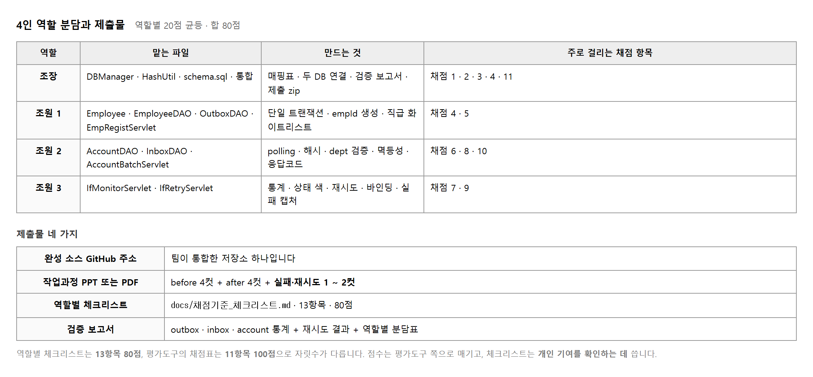
작업지시서는 역할별 20점 × 4 = 80점 으로 나누라고 적어 두었고,
프로젝트 안의 docs/채점기준_체크리스트.md 도 13항목 80점입니다.
그런데 평가도구의 채점표는 11항목 100점입니다.
자릿수가 다르니 점수는 평가도구 쪽으로 매기고,
체크리스트는 누가 무엇을 했는지 확인하는 데 씁니다.
이 차이가 뜻하는 바는 하나입니다. 조별 산출물 전체가 채점됩니다. 내 몫만 끝내고 손을 놓으면 남의 몫에서 깎인 점수가 내 점수가 됩니다. 조장이 합치는 시간을 미리 떼어 두십시오. 마지막 한 시간이면 모자랍니다.
main 에 넷이 동시에 올리면 충돌합니다.목적 — 이 교과는 혼자 하는 것이 아닙니다. 조별 산출물 전체가 채점되므로, 내 몫만 끝내고 손을 놓으면 남의 몫에서 깎인 점수가 내 점수가 됩니다.
| 사람 | 맡는 것 | 주로 걸리는 항목 |
|---|---|---|
| 조장 | DBManager · 매핑표 · 합치기 |
1 · 3 · 4 — 그리고 통합 전체 |
| 조원 1 | 보내는 쪽 — 사원 등록과 메모 남기기 | 5 (단일 트랜잭션) |
| 조원 2 | 받는 쪽 — 배치와 계정 생성 | 6 · 7 (멱등성 · 예외처리) |
| 조원 3 | 모니터링 화면 · 실패 시연 | 9 · 10 · 11 |
조장 DBManager
↓ (이것이 끝나야 나머지 셋이 «실행» 해 볼 수 있습니다)
조원 1 송신 조원 3 모니터링 화면
↓ (테이블만 있으면 먼저 만들 수 있습니다)
조원 2 수신 배치
↓
조원 3 실패 시연 → 조장 합치기
DBManager 가 병목입니다.
이것이 없으면 아무도 연결을 못 만들어 코드를 짜도 돌려볼 수가 없습니다.
조장은 이것을 가장 먼저, 매핑표와 함께 끝내고 공유하십시오.
삼십 분이면 됩니다.main
└ develop
├ feature/leader 조장
├ feature/send 조원 1
├ feature/recv 조원 2
└ feature/monitor 조원 3
넷이 main 에 동시에 올리면 충돌합니다.
각자 가지를 쓰고 조장이 develop 으로 합칩니다.
| 저장소에 «안» 올리는 것 | 왜 |
|---|---|
config/db.properties |
비밀번호가 들어 있습니다. 채점 항목 8 (보안) 에서 깎입니다 |
build/ · *.class |
만들어지는 것이라 올릴 까닭이 없습니다 |
db.properties.sample 만 올립니다.
.gitignore 를 첫 커밋 전에 만드십시오.
| 어디에 적힌 것 | 모양 | 쓰임 |
|---|---|---|
| 작업지시서 | 역할별 20점 × 4 = 80 | 누가 무엇을 하는지 나누는 데 |
docs/채점기준_체크리스트.md | 13항목 80점 | 빠뜨린 것이 없는지 훑는 데 |
| 평가도구 채점표 | 11항목 100점 | 실제 점수는 이것으로 매겨집니다 |
자릿수가 다릅니다. 헷갈리지 마십시오 — 점수는 11항목 100점, 체크리스트는 확인용입니다.
| 내는 것 | 누가 | |
|---|---|---|
| □ | 완성한 GitHub 저장소 주소 | 조장 |
| □ | 작업과정 PPT | 각자 찍고 조장이 모음 |
| □ | 역할별 체크리스트 | 각자 |
| □ | 통합 검증 보고서 | 조장 |
PPT 에는 시작 화면 넷 · 완성 화면 넷, 그리고 실패했다가 되살린 화면 한두 컷이 들어갑니다.
조장이 넷을 합치고, 돌려 보고, 캡처하고, 보고서를 쓰는 데 마지막 한 시간으로는 모자랍니다. 각자의 마감을 전체 마감보다 앞에 두십시오.
전체 마감 │████████████████████████████│
각자 마감 │██████████████████│
합치기 │ │██████████│ ← 이만큼 떼어 둡니다
제출물 — 역할 · 순서 · 가지 이름 · 각자 마감을 적은 한 장
스스로 확인 —
① 넷이 각자 무엇을 맡는지 적었습니까
② 조장의 DBManager 가 먼저라는 것을 압니까
③ 가지를 넷으로 나눴습니까
④ 합치는 시간을 따로 떼었습니까
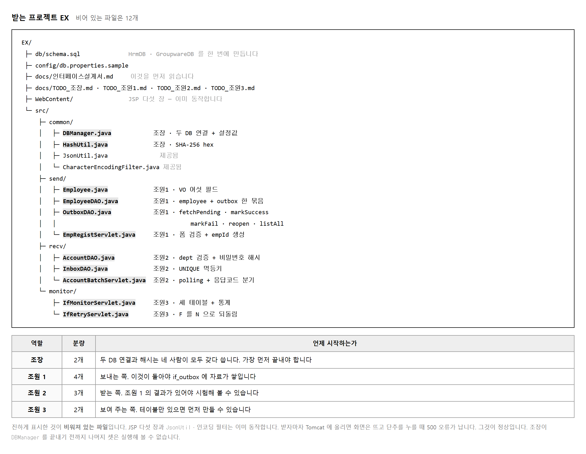
프로젝트를 이클립스로 가져오고, db/schema.sql 을 그대로 실행합니다.
이 파일 하나가 데이터베이스 두 개를 만듭니다.
보내는 쪽 HrmDB 와 받는 쪽 GroupwareDB 입니다.
부서 마스터에 다섯 건이 미리 들어가는 것까지 이 파일이 합니다.
mysql -u root -p < db/schema.sql -- 끝나면 이렇게 나옵니다 --- HrmDB --- employee, if_outbox --- GroupwareDB --- account, account_history, dept, if_inbox --- 초기 부서 --- D001 경영지원본부 / D002 개발본부 / D003 영업본부 ...
그 다음 config/db.properties.sample 을
db.properties 로 복사해 내 환경에 맞춥니다.
sample 파일을 그냥 쓰면 안 됩니다.
원본은 그대로 두고 복사본을 고쳐야 다른 조원과 충돌하지 않습니다.
UnsupportedOperationException 이라고 적혀 있으면 정상입니다.
이 네 장면이 제출물의 before 4컷 입니다. 지금 찍어 두십시오.
목적 — 코드를 채우기 전에 해야 할 일이 둘입니다. 깨진 화면 넷을 찍는 것과 데이터베이스 둘을 만드는 것. 앞의 것은 지금 아니면 다시 만들 수 없습니다.
EX 폴더를 고릅니다.src 아래를 펴 봅니다.EX
├ src
│ ├ common DBManager · JsonUtil … ← 조장
│ ├ send EmpRegistServlet · EmpDAO … ← 조원 1
│ ├ recv AccountBatchServlet · … ← 조원 2
│ └ monitor MonitorServlet · … ← 조원 3
├ WebContent JSP 다섯 장 ← 고치지 않습니다
├ config
│ └ db.properties.sample
└ db
└ schema.sql
WebContent/ 의 JSP 는 고치지 마십시오.
화면은 이미 돌아갑니다. 마음에 안 든다고 손대면
채점자가 보려는 화면이 사라집니다.
고칠 곳은 src/ 아래 자바 열두 파일뿐입니다.mysql -u root -p < db/schema.sql
이 파일 하나가 데이터베이스 두 개를 만듭니다.
--- HrmDB ---
employee
if_outbox
--- GroupwareDB ---
account
account_history
dept
if_inbox
--- 초기 부서 ---
D001 경영지원본부
D002 개발본부
D003 영업본부
D004 마케팅본부
D005 품질관리본부
| 만들어진 것 | 누구의 것 |
|---|---|
HrmDB — employee ·
if_outbox |
보내는 쪽 (인사 시스템) |
GroupwareDB — account ·
if_inbox · dept ·
account_history |
받는 쪽 (그룹웨어) |
부서 다섯 건이 미리 들어갑니다. 이것이 account 의
외래키가 가리키는 곳입니다 (실습 2-11 에서 씁니다).
cd config
copy db.properties.sample db.properties
.sample 을 그냥 고쳐 쓰지 마십시오.
원본은 저장소에 올라가는 파일이라, 고치면 내 비밀번호가 따라 올라갑니다.
| 파일 | 저장소에 |
|---|---|
db.properties.sample |
올립니다. 받은 사람이 무엇을 채울지 압니다 |
db.properties |
안 올립니다. .gitignore 에 넣습니다 |
서블릿을 돌리기 전에 연결만 따로 시험하십시오.
try (Connection c = DriverManager.getConnection(url, user, pass)) {
System.out.println("연결 성공 " + c.getCatalog());
}
useSSL=false 만 적고
allowPublicKeyRetrieval=true 를 빠뜨린 것입니다.
MySQL 8 은 비밀번호를 암호화해 주고받는데, SSL 을 끄면
그 열쇠를 받아 올 길을 따로 열어 줘야 합니다.
둘 다 적으십시오. 두 주소(hrm.url · gw.url)
모두입니다.아직 자바가 비어 있으므로 화면은 뜨지만 눌러도 안 됩니다. 그것이 정상이고, 그 장면이 제출물입니다.
| 찍을 화면 | 보여야 할 것 | |
|---|---|---|
| 1 | 입사 등록 | 등록을 누르면 500 오류 |
| 2 | 전송 대기 목록 | 비어 있거나 오류 |
| 3 | 배치 실행 | 눌러도 아무 일 없음 |
| 4 | 모니터링 | 숫자가 안 나옴 |
500 오류 화면에 이렇게 적혀 있으면 제대로 받은 것입니다.
java.lang.UnsupportedOperationException
캡처/before/
01_입사등록_500.png
02_전송대기.png
03_배치실행.png
04_모니터링.png
이름에 번호와 무엇인지를 적어 두십시오. 나중에 완성 화면 넷과 나란히 놓을 때 짝이 맞아야 합니다.
제출물 — schema.sql 실행 결과 + 깨진 화면 네 컷
스스로 확인 —
① 데이터베이스가 둘 생겼습니까
② 부서가 다섯 건 들어 있습니까
③ db.properties 를 복사해서 만들었습니까
④ 깨진 화면 넷을 찍어 두었습니까
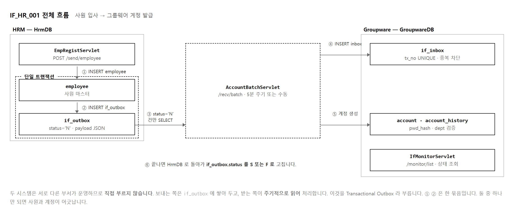
인사 시스템이 그룹웨어를 직접 부르면 그룹웨어가 멈춰 있을 때 입사 등록도 멈춥니다.
부서가 다르니 상대가 언제 점검하는지도 모릅니다.
그래서 보내는 쪽은 if_outbox 에 「이것을 보내야 한다」고 적어 두기만 하고 끝냅니다.
받는 쪽이 자기 형편에 맞춰 가져갑니다.
이 방식을 Transactional Outbox 라 부릅니다. 이름이 어려워 보이지만 하는 일은 메모를 남겨 두는 것입니다. 메모를 남기는 일과 사원을 등록하는 일이 한 묶음으로 묶여야 합니다. 둘이 따로 확정되면 메모 없는 사원이나 사원 없는 메모가 생깁니다.
| 읽을 것 | 이 과제의 값 | 어디에 쓰이는가 |
|---|---|---|
| IF ID | IF_HR_001 | 양쪽 테이블의 if_id 칸에 그대로 들어갑니다 |
| 송신 · 수신 | HRM → Groupware | 어느 쪽이 먼저 쓰고 어느 쪽이 읽는지 |
| 주기 | 5분 또는 수동 | 배치를 얼마나 자주 돌릴지 |
| 방식 | Async / Batch · DB 테이블 | HTTP 가 아니라 테이블을 쓴다는 것 |
| 멱등키 | tx_no = emp_id | 중복을 무엇으로 가려내는지 |
채점 항목 2 가 「데이터 흐름을 파악하여 연계가 필요한 기능을 식별할 수 있는가」 입니다. 그림을 한 장 그려 두면 이 항목은 끝납니다. PPT 첫 장에 이 흐름도를 넣으십시오.
목적 — 항목 2 는 10점 이고 코드를 한 줄도 안 씁니다. 흐름도 한 장이면 끝납니다. 다만 그림을 그리기 전에 한 건이 네 테이블을 지나가는 것을 직접 보고 가는 편이 훨씬 빠릅니다.
MySQL 콘솔을 열고 이 네 줄을 메모장에 붙여 두십시오. 단계마다 통째로 복사해 치면 됩니다.
SELECT 'employee' AS t, COUNT(*) FROM HrmDB.employee
UNION ALL SELECT 'if_outbox', COUNT(*) FROM HrmDB.if_outbox
UNION ALL SELECT 'if_inbox', COUNT(*) FROM GroupwareDB.if_inbox
UNION ALL SELECT 'account', COUNT(*) FROM GroupwareDB.account;
employee 0
if_outbox 0
if_inbox 0
account 0
화면에서 사원 한 명을 등록하고 바로 같은 SQL 을 칩니다.
employee
emp_id emp_name
E20260401001 이수진
if_outbox
tx_no status snd_dt
E20260401001 N NULL
if_inbox 0건
account 0건
| 보이는 것 | 뜻 |
|---|---|
employee 에 한 줄 | 사원이 등록됐습니다 |
if_outbox 에 status='N' |
「이것을 보내야 한다」 는 메모입니다. 아직 안 보냈습니다 |
snd_dt 가 NULL |
보낸 시각이 아직 없습니다 |
| 받는 쪽은 0건 | 그룹웨어는 아직 아무것도 모릅니다 |
여기가 이 교과의 핵심입니다. 등록은 이미 끝났습니다. 그룹웨어가 멈춰 있든 점검 중이든 인사 시스템은 상관하지 않습니다.
if_outbox
tx_no status snd_dt
E20260401001 S 2026-09-18 00:13:40
if_inbox
tx_no status proc_ms
E20260401001 S 7
account
account_id user_name acct_status
E20260401001 이수진 A
account_history
account_id action
E20260401001 CREATE
| 바뀐 것 | 누가 바꿨는가 |
|---|---|
if_outbox.status N → S |
배치가 「잘 보냈다」 고 표시 |
if_inbox 에 한 줄 |
받는 쪽이 「받았다」 고 적음 |
account 에 계정 | 받는 쪽이 실제로 만듦 |
proc_ms = 7 |
받아서 일하는 데 걸린 시간 (밀리초) |
| 직접 부른다면 | 테이블에 쌓아 둔다면 |
|---|---|
| 그룹웨어가 멈추면 입사 등록도 멈춥니다 | 입사 등록은 그냥 됩니다 |
| 상대가 언제 점검하는지 알아야 합니다 | 알 필요가 없습니다 |
| 실패하면 사라집니다 | 메모가 N 으로 남아 다시 보낼 수 있습니다 |
| 부서가 다르면 권한을 서로 줘야 합니다 | 각자 자기 테이블만 봅니다 |
이 방식을 Transactional Outbox 라 부릅니다. 이름이 어려워 보이지만 메모를 남겨 두는 것이 전부입니다.
| 읽을 것 | 이 과제의 값 | 어디에 쓰이는가 |
|---|---|---|
| IF ID | IF_HR_001 |
양쪽 테이블의 if_id 칸에 그대로 |
| 송신 · 수신 | HRM → Groupware | 어느 쪽이 쓰고 어느 쪽이 읽는지 |
| 주기 | 5분 또는 수동 | 배치를 얼마나 자주 |
| 방식 | Async / Batch · DB 테이블 | HTTP 가 아니라 테이블을 쓴다는 것 |
| 멱등키 | tx_no = emp_id |
중복을 무엇으로 가려내는지 |
손으로 그려도 됩니다. 네 칸과 화살표 셋이면 충분합니다.
┌─ HRM ─────────────────┐ ┌─ Groupware ──────────┐
│ │ │ │
│ employee ─┐ │ │ ┌─ if_inbox │
│ ├ 한 트랜잭션│ 배치 │ │ │
│ if_outbox ┘ (N) │ ──────→│ └─ account │
│ ↑ │ │ (한 트랜잭션) │
│ └ 배치가 S 로 고침 │←───────│ │
└───────────────────────┘ └──────────────────────┘
| 그림에 꼭 넣을 것 | 왜 |
|---|---|
| 점선 상자 둘 | 한 트랜잭션으로 묶이는 곳. 항목 5 의 근거가 됩니다 |
| 화살표 방향 | 배치가 가져가는 것이지 HRM 이 보내는 것이 아닙니다 |
N → S |
상태가 어디서 바뀌는지 |
이 그림을 PPT 첫 장에 넣으십시오. 항목 2 는 이것으로 끝납니다.
제출물 — 절차 2 · 3 · 4 의 조회 결과 세 장 + 흐름도 한 장
스스로 확인 —
① 등록 직후 받는 쪽이 0건인 것을 봤습니까
② 배치 뒤 status 가 N → S 로 바뀌는 것을 봤습니까
③ 흐름도에 점선 상자 둘이 있습니까
④ 멱등키가 무엇인지 적었습니까
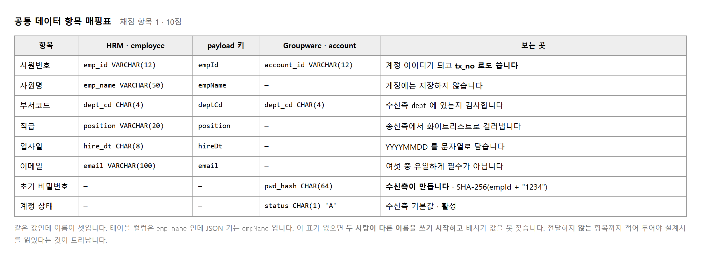
데이터베이스 컬럼은 밑줄을 쓰는 것이 관례라 emp_name 이고,
자바와 JSON 은 낙타 등 표기를 쓰는 것이 관례라 empName 입니다.
받는 쪽 계정 테이블은 아예 다른 낱말인 account_id 를 씁니다.
셋 다 같은 값인데 적는 법만 다릅니다.
이것을 표로 만들어 두지 않으면 무슨 일이 생기는지 실제로 겪게 됩니다.
조원 1 이 payload 에 emp_name 으로 넣고
조원 2 가 empName 으로 꺼내면 오류 없이 빈 문자열이 나옵니다.
계정은 생기는데 이름이 비어 있고, 왜 그런지 한참 못 찾습니다.
표의 아래 두 줄이 보내지 않는 항목입니다. 비밀번호 해시와 계정 상태는 받는 쪽이 스스로 만듭니다. 보내는 쪽은 비밀번호를 알지도 못하고 알 필요도 없습니다. 이 두 줄을 적어 두면 설계서를 끝까지 읽었다는 것이 드러나고, 나중에 「비밀번호는 누가 정하나」 하는 질문이 나오지 않습니다.
목적 — 항목 1 은 10점, 종이 한 장이면 됩니다. 그런데 이 표를 안 만들고 코드부터 쓰면 조원 1 과 조원 2 의 이름이 어긋나고, 오류 없이 빈 값이 들어갑니다. 찾는 데 한 시간씩 걸립니다.
| 항목 | HRM (보내는 쪽) | payload 키 | Groupware (받는 쪽) |
|---|---|---|---|
| 사원번호 | employee.emp_id |
empId | account.account_id |
| 사원명 | employee.emp_name |
empName | account.user_name |
| 부서코드 | employee.dept_code |
deptCode | account.dept_code |
| 직급 | employee.position |
position | account.position |
| 입사일 | employee.hire_date |
hireDate | account.join_date |
| 이메일 | employee.email |
email | account.email |
여섯 항목 가운데 이름이 «세 번 다 같은» 것은 둘뿐입니다
(position · email).
나머지 넷은 칸마다 다릅니다.
| 어디 | 표기 | 관례 |
|---|---|---|
| 데이터베이스 칸 | emp_name |
밑줄로 끊습니다 (snake_case) |
| 자바 · JSON | empName |
대문자로 끊습니다 (camelCase) |
| 받는 쪽 칸 | user_name |
아예 다른 낱말입니다. 받는 쪽은 「사원」이 아니라 「사용자」로 봅니다 |
셋 다 같은 값인데 적는 법만 다릅니다. 시스템이 다르면 부르는 이름도 다른 것이 자연스럽습니다. 그래서 번역표가 필요합니다.
조원 1 이 payload 에 empName 으로 넣었는데
조원 2 가 emp_name 으로 꺼냈다고 해 봅시다.
empName → [김서연]
emp_name → [] ← 오류 없이 빈 값
null 이나 빈 문자열이 나올 뿐입니다.
그래서 계정은 멀쩡히 생기는데 이름만 비어 있습니다.
배치도 S 로 찍히고, 오류 기록에도 안 남습니다.
자료를 눈으로 봐야만 알 수 있습니다.실제로 이렇게 보입니다.
배치는 «성공» 으로 끝났습니다
account
account_id user_name dept_code acct_status
E20260401002 [] D001 A
↑ 비어 있습니다 (대괄호는 보이라고 씌운 것)
| 항목 | 받는 쪽 칸 | 누가 만드는가 |
|---|---|---|
| 비밀번호 해시 | account.passwd_hash |
받는 쪽이 스스로 만듭니다 (실습 2-12) |
| 계정 상태 | account.acct_status |
받는 쪽이 'A' 로 정합니다 |
보내는 쪽은 비밀번호를 알지도 못하고 알 필요도 없습니다. 이 두 줄을 적어 두면 설계서를 끝까지 읽었다는 것이 드러나고, 나중에 「비밀번호는 누가 정하나」 하는 질문이 안 나옵니다.
{"empId":"E20260401001","empName":"이수진","deptCode":"D001",
"position":"사원","hireDate":"20260401","email":"sujin@company.co.kr"}
표만 있으면 헷갈립니다. 진짜 한 건을 옆에 붙여 두면 조원들이 그것을 보고 맞춥니다.
| 방법 | 좋은 점 · 나쁜 점 |
|---|---|
저장소에 docs/매핑표.md |
가장 좋습니다. 고치면 모두에게 반영됩니다 |
| 단체 대화방에 사진 | 당장 빠르지만 고치면 옛 사진이 돌아다닙니다 |
| 각자 받아 적기 | 하지 마십시오. 받아 적다가 틀립니다 |
계정이 생긴 뒤 이 SQL 로 빈 칸이 있는지 봅니다.
SELECT account_id, user_name, dept_code, join_date, email
FROM GroupwareDB.account
WHERE user_name = '' OR user_name IS NULL
OR join_date = '' OR join_date IS NULL;
한 줄이라도 나오면 매핑이 어긋난 것입니다. 0건이어야 합니다. 이 조회 결과를 보고서에 넣으면 항목 1 의 근거가 하나 더 생깁니다.
제출물 — 매핑표(여섯 + 전달 안 하는 둘) + payload 한 건 + 절차 7 의 조회 결과
스스로 확인 —
① 항목 여섯과 전달 안 하는 둘이 다 있습니까
② payload 키를 실제 코드와 대조했습니까
③ 조원 모두에게 공유했습니까
④ 빈 칸 조회가 0건입니까
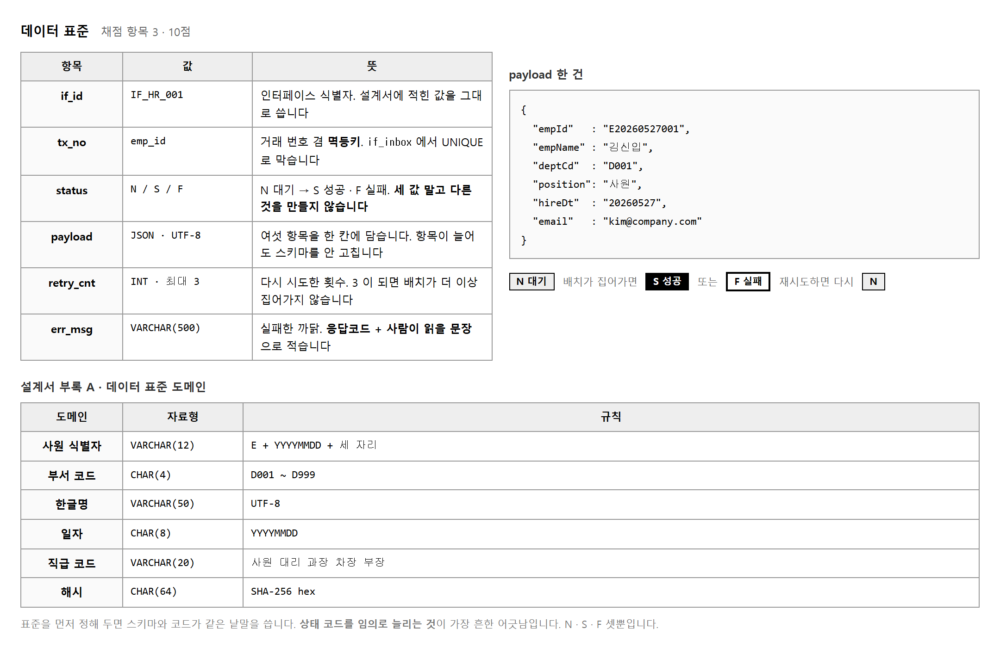
데이터 표준은 값이 어떻게 생겨야 하는지를 미리 정해 둡니다.
사원번호는 E 로 시작해 여덟 자리 날짜와 세 자리 일련번호가 붙어
모두 열두 글자입니다. 입사일은 날짜형이 아니라 CHAR(8) 문자열입니다.
시스템마다 날짜를 다루는 법이 달라 문자열로 주고받는 것이 안전하기 때문입니다.
상태 코드가 셋뿐이라는 것도 표준입니다.
기다리는 중이면 N, 잘 됐으면 S, 안 됐으면 F 입니다.
「처리 중」 을 뜻하는 P 를 넣고 싶어지는데, 넣으면 감점입니다.
설계서에 없는 값을 만드는 순간 받는 쪽이 그 값을 모릅니다.
여섯 항목을 컬럼 여섯 개로 만들 수도 있습니다. 그런데 그러면 항목이 하나 늘 때마다 양쪽 테이블을 모두 고쳐야 합니다. JSON 문자열 한 칸에 담아 두면 항목이 늘어도 테이블은 그대로입니다. 대신 값을 꺼낼 때 키 이름을 틀리면 조용히 빈 값이 나오므로, 앞 단원의 매핑표가 더 중요해집니다.
-- 표준이 지켜졌는지 보는 SQL. 한 줄이라도 나오면 고칠 곳이 있습니다.
SELECT status, COUNT(*) FROM if_outbox
WHERE status NOT IN ('N','S','F') GROUP BY status;
SELECT tx_no FROM if_outbox
WHERE tx_no NOT REGEXP '^E[0-9]{8}[0-9]{3}$';
SELECT COUNT(*) FROM if_outbox WHERE retry_cnt > 3;
목적 — 항목 3 은 10점 입니다. 표준을 「정했다」 고 말하는 것으로는 부족합니다. 어긴 줄이 없다는 것을 보여야 합니다. 검사 SQL 셋을 만들어 둡니다.
| 항목 | 규칙 | 보기 |
|---|---|---|
if_id | 인터페이스 이름 고정 | IF_HR_001 |
tx_no |
E + 날짜 8자리 + 일련 3자리 = 12글자 |
E20260401001 |
status |
N · S · F 셋뿐 |
기다림 · 성공 · 실패 |
payload | JSON 문자열 | {"empId":"…","empName":"…"} |
retry_cnt | 최대 3 | 0 → 1 → 2 → 3 에서 멈춤 |
hire_date |
날짜형이 아니라 CHAR(8) |
20260401 |
상태가 셋뿐이면 배치가 도는 중인 건은 무엇으로 표시하나 싶습니다.
그래서 P 를 넣고 싶어집니다. 넣으면 감점입니다.
| 왜 안 되는가 | 무슨 일이 나는가 |
|---|---|
| 설계서에 없는 값입니다 | 받는 쪽이 P 를 모릅니다.
N 도 S 도 아니라 그냥 버려집니다 |
| 검사 SQL 에 걸립니다 | 채점자가 절차 3 의 SQL 을 치면 그 자리에서 드러납니다 |
배치가 도는 중인 건은 표시할 필요가 없습니다.
돌다 죽으면 N 인 채로 남아 다음 배치가 다시 집습니다.
그것이 이 설계의 장점입니다.
메모장에 붙여 두고 제출 전에 한 번 돌리십시오. 세 개 모두 0건이어야 합니다.
-- ① 상태 코드가 세 값뿐인가
SELECT status, COUNT(*) AS cnt FROM if_outbox
WHERE status NOT IN ('N','S','F') GROUP BY status;
-- ② 사번 형식이 맞는가
SELECT tx_no FROM if_outbox
WHERE tx_no NOT REGEXP '^E[0-9]{8}[0-9]{3}$';
-- ③ 재시도가 한도를 넘지 않았는가
SELECT tx_no, retry_cnt FROM if_outbox WHERE retry_cnt > 3;
검사 SQL 이 0건이라고 안심하면 안 됩니다. 어긴 줄이 없어서인지, 검사가 틀려서인지 알 수 없습니다. 셋을 일부러 넣어 보십시오.
INSERT INTO if_outbox (if_id, tx_no, status, payload, retry_cnt)
VALUES ('IF_HR_001','E20260401009','P','{}',0), -- 없는 상태
('IF_HR_001','EMP001','N','{}',0), -- 형식 틀린 사번
('IF_HR_001','E20260401010','F','{}',5); -- 재시도 초과
세 검사가 각각 한 줄씩 잡아내야 합니다.
--- 상태 코드 위반 ---
+--------+-----+
| status | cnt |
+--------+-----+
| P | 1 |
+--------+-----+
--- 사번 형식 위반 ---
+--------+
| tx_no |
+--------+
| EMP001 |
+--------+
--- 재시도 초과 ---
+--------------+-----------+
| tx_no | retry_cnt |
+--------------+-----------+
| E20260401010 | 5 |
+--------------+-----------+
같은 날짜 하나가 시스템마다 이렇게 보입니다.
+------------+------------+------------+
| ISO | 미국식 | 유럽식 |
+------------+------------+------------+
| 2026-04-01 | 04/01/2026 | 01.04.2026 |
+------------+------------+------------+
| 보내는 값 | 받는 쪽이 읽으면 |
|---|---|
01.04.2026 (유럽식) |
미국식으로 읽는 쪽은 2026년 1월 4일로 읽습니다 |
"20260401" (문자열) |
읽을 여지가 없습니다. 여덟 글자 그대로입니다 |
그래서 시스템 사이에 오가는 날짜는 문자열로 고정하는 것이 관례입니다. 받는 쪽이 자기 형편에 맞게 바꿔 쓰면 됩니다.
WHERE status = 'N' AND retry_cnt < 3
| 이 조건이 뜻하는 것 | |
|---|---|
status='N' |
아직 안 보낸 것만. S 는 다시 안 보냅니다 |
retry_cnt < 3 |
세 번 실패한 것은 더 안 집습니다. 사람이 봐야 할 건입니다 |
표준의 숫자 3 이 코드의 조건과 같아야 합니다.
코드에 3 을 박지 말고
db.properties 의 batch.max.retry 에서 읽으십시오
(실습 2-7).
docs/
매핑표.md ← 실습 2-4
데이터표준.md ← 이 실습
검사SQL.sql ← 절차 3 의 셋
검사 SQL 을 파일로 남기는 것이 요령입니다. 통합 검증 보고서에 「이 SQL 로 확인했고 모두 0건」 이라고 결과와 함께 붙이면 항목 3 의 근거가 분명해집니다.
제출물 — 데이터 표준 표 + 검사 SQL 셋 + 0건으로 나온 실행 결과
스스로 확인 —
① 상태가 N · S · F 셋뿐입니까
② 검사 SQL 이 어긴 줄을 실제로 잡는지 봤습니까
③ 일부러 넣은 줄을 지웠습니까
④ 코드의 재시도 한도가 표준과 같은 숫자입니까
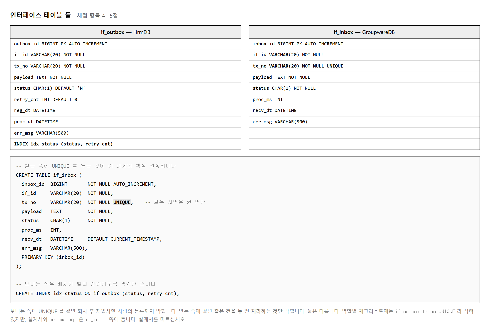
보내는 쪽 if_outbox 에는 retry_cnt 가 있고
받는 쪽 if_inbox 에는 proc_ms 가 있습니다.
재시도는 보낸 것을 다시 보내는 일이라 보내는 쪽이 세고,
처리 시간은 받아서 일하는 시간이라 받는 쪽이 잽니다.
칸 이름만 봐도 누구의 사정을 적는 칸인지 알 수 있습니다.
보내는 쪽에 UNIQUE 를 걸면 같은 사번을 두 번 등록할 수 없습니다.
그런데 퇴사했다 재입사하는 경우가 실제로 있습니다.
받는 쪽에 걸면 같은 건을 두 번 처리하는 것만 막힙니다.
막으려는 것이 「등록」이 아니라 「중복 처리」이므로 받는 쪽이 맞습니다.
docs/채점기준_체크리스트.md 에는
if_outbox.tx_no UNIQUE 라고 적혀 있습니다.
설계서와 schema.sql 은 if_inbox 쪽입니다.
실제로 도는 것은 schema.sql 이니 설계서를 따르십시오.
보고서에 이 차이를 한 줄 적어 두면 읽었다는 것이 드러납니다.
배치가 매번 WHERE status='N' AND retry_cnt < 3 으로 찾습니다.
건수가 쌓이면 이 조회가 느려지므로 두 컬럼에 색인을 겁니다.
조건에 쓰는 순서대로 묶어야 쓸모가 있습니다.
schema.sql 에 이미 들어 있으니 지우지만 마십시오.
UNIQUE 를 «어느 쪽에» 거는가
목적 — 항목 4 는 5점입니다. schema.sql 이 이미 만들어 주므로
만들 일은 없습니다. 대신 왜 이렇게 생겼는지 설명할 수 있어야 합니다.
체크리스트와 설계서가 엇갈리는 자리가 하나 있습니다.
| 칸 | if_outbox | if_inbox | 왜 한쪽에만 |
|---|---|---|---|
if_id · tx_no ·
status · payload |
있음 | 있음 | 양쪽 공통 |
retry_cnt | 있음 | 없음 | 재시도는 보낸 것을 다시 보내는 일. 보내는 쪽이 셉니다 |
snd_dt | 있음 | 없음 | 보낸 시각 |
proc_ms | 없음 | 있음 | 받아서 일하는 데 걸린 시간. 받는 쪽이 잽니다 |
rcv_dt | 없음 | 있음 | 받은 시각 |
칸 이름만 봐도 누구의 사정을 적는 칸인지 알 수 있습니다. 이 설명을 할 수 있으면 항목 4 는 끝입니다.
SHOW INDEX FROM HrmDB.if_outbox;
SHOW INDEX FROM GroupwareDB.if_inbox;
| 테이블 | 색인 | 무엇을 위한 것 |
|---|---|---|
if_outbox |
idx_outbox_pick
( status, retry_cnt) |
빠르게 찾기 위한 것. 중복은 안 막습니다 |
if_inbox |
uk_inbox_tx (tx_no) — UNIQUE |
중복을 막기 위한 것 |
색인은 걸어 두기만 해서는 소용없습니다. 조건과 순서가 맞아야 씁니다.
EXPLAIN SELECT seq, tx_no FROM if_outbox WHERE status='N' AND retry_cnt < 3;
+-------+-----------------+-----------------+-----------------------+
| type | possible_keys | key | Extra |
+-------+-----------------+-----------------+-----------------------+
| range | idx_outbox_pick | idx_outbox_pick | Using index condition |
+-------+-----------------+-----------------+-----------------------+
| 보는 칸 | 이래야 합니다 |
|---|---|
key |
idx_outbox_pick — 색인을 씁니다.
NULL 이면 안 쓰는 것입니다 |
type |
range · ref 면 좋습니다.
ALL 이면 전부 뒤지는 것입니다 |
(status, retry_cnt) 로 묶었으니
WHERE status=… AND retry_cnt… 에 맞습니다.
retry_cnt 만으로 찾으면 이 색인은 못 씁니다.
schema.sql 에 이미 들어 있으니 지우지만 마십시오.UNIQUE 를 «보내는 쪽» 에 걸어 봅니다연습용 표를 하나 만들어 시험해 보십시오.
CREATE TABLE ob_unique LIKE if_outbox;
ALTER TABLE ob_unique ADD UNIQUE KEY uk_ob_tx (tx_no);
INSERT INTO ob_unique (if_id, tx_no, payload) VALUES ('IF_HR_001','E20260401001','{}');
INSERT INTO ob_unique (if_id, tx_no, payload) VALUES ('IF_HR_001','E20260401001','{}');
ERROR 1062 (23000): Duplicate entry 'E20260401001' for key 'ob_unique.uk_ob_tx'
| 막힌 것 | 이게 맞는가 |
|---|---|
| 같은 사번을 두 번 등록하는 것 | 아닙니다. 퇴사했다 재입사하면 같은 사번이 다시 올 수 있습니다 |
막으려는 것은 「등록」이 아니라 「중복 처리」 입니다. 그래서 받는 쪽에 겁니다.
실습 2-10 에서 다시 하지만 미리 봐 둡니다. 같은 건을 두 번 배치에 태우면 이렇게 됩니다.
E20260401001 → F : Duplicate entry 'E20260401001' for key 'if_inbox.uk_inbox_tx'
account 줄 수 : 1 ← 두 번 돌렸는데 계정은 «하나»
계정이 두 개 생기는 것만 막혔습니다. 이것이 노린 것입니다. 이 성질을 멱등성 이라 부릅니다 — 몇 번 해도 결과가 같다는 뜻입니다.
| 어디 | 뭐라고 적혀 있나 |
|---|---|
docs/채점기준_체크리스트.md |
if_outbox.tx_no UNIQUE |
설계서 · db/schema.sql |
if_inbox.tx_no UNIQUE |
schema.sql 입니다.
설계서를 따르십시오.
그리고 보고서에 이 차이를 한 줄 적어 두십시오 —
「체크리스트는 outbox 로 적혀 있으나 설계서와 schema.sql 은 inbox 이며,
재입사를 고려하면 inbox 가 맞다고 판단함」.
문서를 끝까지 읽었다는 것이 드러납니다.DROP TABLE ob_unique; -- 연습용 표는 지웁니다
schema.sql 이 만든 여섯 표는 그대로 두십시오.
색인을 지우거나 칸을 더하면 다른 조원의 코드가 깨집니다.
제출물 — SHOW INDEX 두 개 +
EXPLAIN 결과 + 절차 6 의 판단 한 줄
스스로 확인 —
① retry_cnt 와 proc_ms 가
왜 한쪽에만 있는지 설명할 수 있습니까
② EXPLAIN 의 key 가
idx_outbox_pick 입니까
③ UNIQUE 가 if_inbox 에 있습니까
④ 연습용 표를 지웠습니까
이 과제는 앞 교과들과 달리 연결이 둘입니다.
지금까지는 getConnection() 하나였는데 여기서는
getHrmConnection() 과 getGroupwareConnection() 을 따로 만듭니다.
둘을 섞어 쓰면 없는 테이블을 찾는 오류가 납니다.
# config/db.properties — sample 을 복사해 만듭니다 db.driver=com.mysql.cj.jdbc.Driver # 보내는 쪽 hrm.url=jdbc:mysql://localhost:3306/HrmDB?useSSL=false&allowPublicKeyRetrieval=true&serverTimezone=Asia/Seoul&characterEncoding=UTF-8 hrm.user=ifuserx hrm.password=ifx1234! # 받는 쪽 gw.url=jdbc:mysql://localhost:3306/GroupwareDB?useSSL=false&allowPublicKeyRetrieval=true&serverTimezone=Asia/Seoul&characterEncoding=UTF-8 gw.user=ifuserx gw.password=ifx1234! # 배치 처리 옵션 — 코드에 숫자를 박지 않고 여기서 읽습니다 batch.fetch.size=100 batch.max.retry=3 account.init.password.suffix=1234
설정 파일에서 읽는 값이 넷입니다. 연결 정보 둘, 배치 옵션 둘입니다.
DBManager 는 이것을 한 번만 읽어 두고 나눠 줍니다.
public class DBManager {
private static final Properties P = new Properties();
static { // 클래스가 처음 쓰일 때 한 번
try (InputStream in = DBManager.class.getClassLoader()
.getResourceAsStream("db.properties")) {
P.load(new InputStreamReader(in, StandardCharsets.UTF_8));
Class.forName(P.getProperty("db.driver"));
} catch (Exception e) { throw new ExceptionInInitializerError(e); }
}
public static Connection getHrmConnection() throws SQLException {
return DriverManager.getConnection(P.getProperty("hrm.url"),
P.getProperty("hrm.user"), P.getProperty("hrm.password"));
}
public static Connection getGroupwareConnection() throws SQLException {
return DriverManager.getConnection(P.getProperty("gw.url"),
P.getProperty("gw.user"), P.getProperty("gw.password"));
}
public static int getFetchSize() {
return Integer.parseInt(P.getProperty("batch.fetch.size", "100"));
}
public static int getMaxRetry() {
return Integer.parseInt(P.getProperty("batch.max.retry", "3"));
}
public static String getInitPasswordSuffix() {
return P.getProperty("account.init.password.suffix", "1234");
}
public static void close(AutoCloseable... cs) {
for (AutoCloseable c : cs)
if (c != null) try { c.close(); } catch (Exception ignored) {}
}
}
db.properties 는 저장소에 올리지 않습니다.
.gitignore 에 넣고 db.properties.sample 만 올립니다.
비밀번호가 들어 있는 파일이 저장소에 있으면
채점 항목 8 의 보안에서 깎입니다.
목적 — 조장이 가장 먼저 끝내야 하는 것입니다. 이것이 없으면 나머지 셋은 코드를 짜도 돌려볼 수가 없습니다. 삼십 분이면 됩니다.
config/db.properties — .sample 을 복사해 만든 것입니다.
db.driver=com.mysql.cj.jdbc.Driver
# 보내는 쪽
hrm.url=jdbc:mysql://localhost:3306/HrmDB?useSSL=false&allowPublicKeyRetrieval=true&serverTimezone=Asia/Seoul&characterEncoding=UTF-8
hrm.user=ifuserx
hrm.password=ifx1234!
# 받는 쪽
gw.url=jdbc:mysql://localhost:3306/GroupwareDB?useSSL=false&allowPublicKeyRetrieval=true&serverTimezone=Asia/Seoul&characterEncoding=UTF-8
gw.user=ifuserx
gw.password=ifx1234!
# 배치 옵션 — 코드에 숫자를 박지 않습니다
batch.fetch.size=100
batch.max.retry=3
account.init.password.suffix=1234
| 주소의 조각 | 없으면 |
|---|---|
useSSL=false |
암호화 연결을 씁니다. 실습에서는 꺼도 됩니다 |
allowPublicKeyRetrieval=true |
MySQL 8 에서 반드시 실패합니다 — 절차 2 |
serverTimezone=Asia/Seoul |
시각이 아홉 시간 어긋납니다 |
characterEncoding=UTF-8 |
한글 이름이 깨집니다 |
allowPublicKeyRetrieval 을 빼고 돌려 봅니다실패 useSSL=false 만 : Public Key Retrieval is not allowed
OK useSSL=false + allowPublicKeyRetrieval=true
OK 옵션을 아예 안 줌 (SSL 기본값)
useSSL=false) 그 열쇠를 받아 올 길이 막히는데,
allowPublicKeyRetrieval=true 가 그 길을 열어 줍니다.
둘 다 적거나, 아예 둘 다 빼거나 입니다.
두 주소 모두에 적어야 합니다 — 하나만 고치고 나머지에서 또 막힙니다.public static Connection getHrmConnection() throws SQLException {
return DriverManager.getConnection(P.getProperty("hrm.url"),
P.getProperty("hrm.user"), P.getProperty("hrm.password"));
}
public static Connection getGroupwareConnection() throws SQLException {
return DriverManager.getConnection(P.getProperty("gw.url"),
P.getProperty("gw.user"), P.getProperty("gw.password"));
}
앞 교과에서는 getConnection() 하나였습니다.
여기서는 둘이고, 이름으로 구별해야 합니다.
[1] HRM 연결로 account 를 찾으면
Table 'HrmDB.account' doesn't exist
[2] Groupware 연결로 employee 를 찾으면
Table 'GroupwareDB.employee' doesn't exist
| 이 말이 나오면 | 고칠 곳 |
|---|---|
Table 'HrmDB.account' doesn't exist |
getGroupwareConnection() 을 써야 할 자리에
getHrmConnection() 을 썼습니다 |
Table 'GroupwareDB.employee' doesn't exist |
그 반대입니다 |
schema.sql 이 여섯 표를 다 만들었으니 표는 있습니다.
연결을 잘못 고른 것입니다.
메시지 앞의 데이터베이스 이름을 보면 어느 연결을 썼는지 바로 압니다.지금 어느 데이터베이스를 보고 있는지는 이렇게 확인합니다.
hrm() → HrmDB
gw() → GroupwareDB
public static int getMaxRetry() {
return Integer.parseInt(P.getProperty("batch.max.retry", "3"));
}
뒤의 "3" 이 설정이 없을 때 쓸 값입니다. 빼면 이렇게 됩니다.
P.getProperty("batch.max.retry") = null
P.getProperty("batch.max.retry", "3") = 3
Integer.parseInt(null) → NumberFormatException: Cannot parse null string
| 기본값을 주면 | 안 주면 |
|---|---|
| 설정이 빠져도 돌아갑니다 | NumberFormatException 으로 그 자리에서 죽습니다 |
static 블록으로 «한 번만» 읽습니다static {
try (InputStream in = DBManager.class.getClassLoader()
.getResourceAsStream("db.properties")) {
P.load(new InputStreamReader(in, StandardCharsets.UTF_8));
Class.forName(P.getProperty("db.driver"));
} catch (Exception e) { throw new ExceptionInInitializerError(e); }
}
| 겪는 일 | 까닭 |
|---|---|
NullPointerException 이
P.load 줄에서 |
in 이 null 입니다 —
db.properties 가 클래스패스에 안 갔습니다 |
| 한글이 깨짐 | InputStreamReader 에
UTF_8 을 안 줬습니다 |
config/ 가 빌드 경로에 들어 있어야
getResourceAsStream("db.properties") 가 찾습니다.
Eclipse 에서 Properties → Java Build Path → Source 에
config 가 있는지 보십시오. 없으면 Add Folder 로 넣습니다.| 메서드 | 쓰는 사람 |
|---|---|
getHrmConnection() | 조원 1 (송신) |
getGroupwareConnection() | 조원 2 (수신) |
getMaxRetry() ·
getFetchSize() | 조원 2 (배치) |
getInitPasswordSuffix() | 조원 2 (계정 생성) |
| 양쪽 연결 모두 | 조원 3 (모니터링) |
다 만들었으면 바로 커밋하고 알리십시오. 조원 셋이 이것을 기다리고 있습니다.
제출물 — DBManager.java +
두 연결이 각각 HrmDB · GroupwareDB 를
본다는 것을 찍은 콘솔
스스로 확인 —
① 두 주소 모두에 allowPublicKeyRetrieval 이 있습니까
② 연결 메서드가 둘이고 이름이 다릅니까
③ 재시도 한도를 설정에서 읽습니까 (코드에 박지 않음)
④ db.properties 를 저장소에 안 올렸습니까
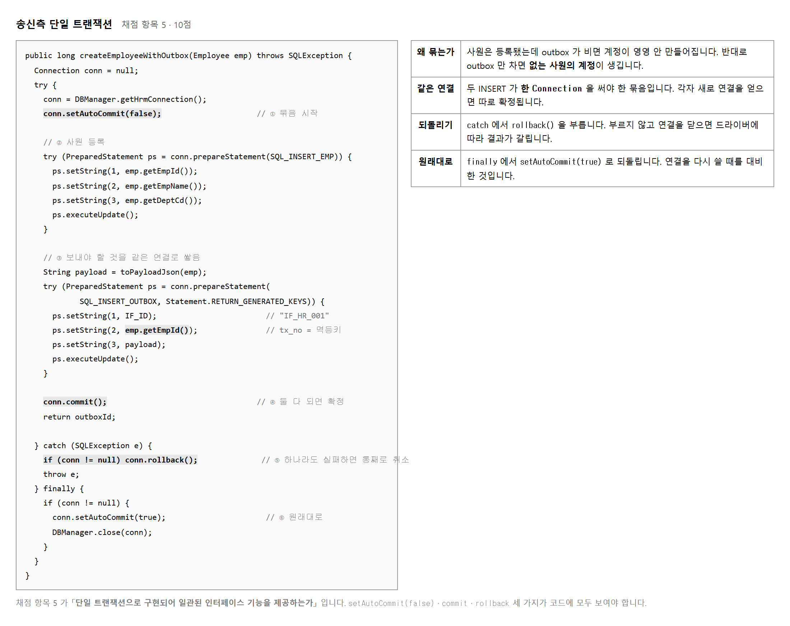
setAutoCommit(false) 를 부르지 않으면
JDBC 는 INSERT 한 줄마다 곧바로 확정합니다.
그러면 첫 INSERT 가 끝난 뒤 두 번째에서 오류가 나도 첫 번째는 이미 들어가 있습니다.
묶음의 시작을 알리는 이 한 줄이 트랜잭션의 전부입니다.
그 다음으로 자주 틀리는 것이 연결을 따로 얻는 것입니다.
두 개의 DAO 를 각각 부르면서 안에서 getHrmConnection() 을 새로 얻으면
둘은 서로 다른 세션이라 따로 확정됩니다.
그래서 이 과제의 정답 코드는 두 INSERT 를 한 메서드 안에 두었습니다.
EmpRegistServlet 이 폼을 받아 값을 검사하고 사번을 만듭니다.
사번은 E + 오늘 날짜 여덟 자리 + 세 자리 일련번호입니다.
검사가 넷인데 하나라도 빠뜨리면 받는 쪽에서 터집니다.
// ① 필수값 — 셋 중 하나라도 비면 안 됩니다
if (empName.isBlank() || deptCd.isBlank() || position.isBlank())
→ E10 필수값 누락
// ② 길이
if (empName.length() > 50) → E10
// ③ 부서 코드 모양
if (!deptCd.matches("D\\d{3}")) → E10
// ④ 직급 화이트리스트 — 목록에 없으면 거절
private static final Set<String> ALLOWED_POSITIONS =
Set.of("사원", "대리", "과장", "차장", "부장");
if (!ALLOWED_POSITIONS.contains(position)) → E31
// ⑤ 사번 만들기
String empId = "E"
+ new SimpleDateFormat("yyyyMMdd").format(new Date())
+ String.format("%03d", new Random().nextInt(1000));
화이트리스트는 「들어와도 되는 것의 목록」입니다. 막을 것을 적는 것이 아니라 허락할 것만 적습니다. 목록 밖은 전부 거절이므로, 생각 못 한 값이 들어와도 막힙니다. 보안에서 늘 이 방향을 씁니다.
목적 — 항목 5 는 10점, 조원 1 의 몫입니다.
코드는 세 줄(setAutoCommit · commit ·
rollback)이 전부인데,
없어도 평소에는 멀쩡히 돌아갑니다. 그래서 빠뜨립니다.
트랜잭션을 안 쓰고 두 줄을 넣습니다. 기본값 그대로입니다.
try (Connection con = DBManager.getHrmConnection()) {
// ① 사원을 넣고
ps1.executeUpdate();
// ② 메모를 남긴다
ps2.executeUpdate();
}
평소에는 잘 됩니다. 둘 다 들어갑니다. 문제는 ①과 ② 사이에서 뭔가 터졌을 때입니다.
두 줄 사이에 이것을 넣고 돌려 보십시오.
if (true) throw new SQLException("메모를 남기다가 터졌다고 치자");
[A] 트랜잭션 «없이» — 메모 남기다 터짐
등록 실패 : 메모를 남기다가 터졌다고 치자
employee
emp_id emp_name
E20260501001 무트랜잭션 ← 남아 있습니다
if_outbox
cnt
0 ← 메모는 없습니다
Connection con = null;
try {
con = DBManager.getHrmConnection();
con.setAutoCommit(false); // ① 여기서부터 묶습니다
ps1.executeUpdate(); // 사원
ps2.executeUpdate(); // 메모
con.commit(); // ② 둘 다 됐으면 확정
} catch (SQLException e) {
try { if (con != null) con.rollback(); } // ③ 하나라도 안 됐으면 되돌림
catch (SQLException ignore) { }
} finally {
try { if (con != null) { con.setAutoCommit(true); con.close(); } }
catch (SQLException ignore) { }
}
| 세 줄 | 하는 일 |
|---|---|
setAutoCommit(false) |
「지금부터 내가 확정할 때까지 기다려라」 |
commit() |
「둘 다 됐다. 확정해라」 |
rollback() |
「하나라도 안 됐다. 없던 일로 해라」 |
[B] 트랜잭션 «있이» — 같은 상황
등록 실패 → rollback : 메모를 남기다가 터졌다고 치자
employee 0건
if_outbox 0건
둘 다 없습니다. 화면의 「등록 실패」 와 자료가 맞아떨어집니다. 사용자는 다시 등록하면 됩니다.
| 트랜잭션 없이 | 트랜잭션 있이 |
|---|---|
| 사원 있음 · 메모 없음
영영 안 보내집니다 |
사원 없음 · 메모 없음
다시 등록하면 됩니다 |
finally 의 두 줄을 빠뜨리지 않습니다| 빠뜨리면 | 무슨 일 |
|---|---|
setAutoCommit(true) |
연결을 풀에서 빌려 쓴 경우 다음 사람이 묶인 상태를 물려받습니다 |
con.close() |
연결이 안 돌아가 쌓입니다 (항목 8 자원 관리) |
rollback 을 try 로 안 감쌈 |
되돌리다 또 터지면 finally 를 못 지나갑니다 |
try-with-resources 는 여기서 안 씁니다.
괄호 안에 선언하면 닫히기만 하고
rollback 을 부를 자리가 없습니다.
트랜잭션이 있는 곳은 try-catch-finally 입니다.조원 2 의 배치도 같습니다. 세 가지를 한 묶음으로 넣습니다.
gw.setAutoCommit(false);
if_inbox 에 넣고
account 에 넣고
account_history 에 넣고
if_inbox 를 S 로 고치고
gw.commit();
가운데서 터지면 셋 다 없어야 합니다. 계정만 생기고 이력이 없거나, 받은 기록만 있고 계정이 없으면 안 됩니다.
이미 흘러간 것이 있는지 확인하는 조회입니다. 보고서에 넣습니다.
-- 메모 없는 사원 (송신 쪽이 깨진 것)
SELECT e.emp_id, e.emp_name
FROM HrmDB.employee e
LEFT JOIN HrmDB.if_outbox o ON o.tx_no = e.emp_id
WHERE o.seq IS NULL;
emp_id emp_name
E20260501001 무트랜잭션 ← 절차 2 에서 만든 것이 그대로 남아 있습니다
0건이어야 합니다. 절차 2 에서 만든 줄이 잡히면 지우고 다시 확인하십시오.
DELETE FROM HrmDB.employee WHERE emp_id='E20260501001';
제출물 — 트랜잭션 없이 / 있이 같은 자리에서 터뜨린 결과 두 장 + 절차 7 의 조회(0건)
스스로 확인 —
① setAutoCommit(false) 가 첫 SQL 전에 있습니까
② catch 에 rollback() 이 있습니까
③ finally 에서 되돌리고 닫습니까
④ 메모 없는 사원 조회가 0건입니까
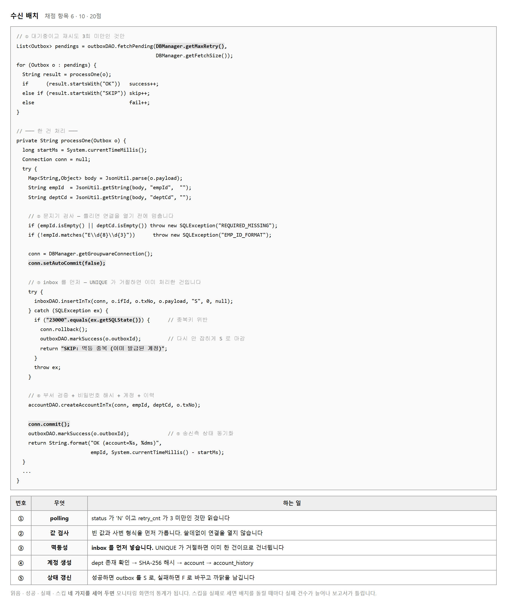
배치라는 말이 거창하지만 하는 일은 목록을 읽어 하나씩 처리하는 것입니다.
읽을 조건이 둘입니다. 아직 처리 안 된 것(status='N') 이고,
세 번 넘게 실패하지 않은 것(retry_cnt < 3) 입니다.
두 번째 조건이 없으면 고칠 수 없는 건이 영원히 다시 잡혀 로그를 채웁니다.
한 번에 백 건까지만 읽습니다. 설정에서 읽는 값입니다. 수천 건이 밀려 있을 때 한 번에 다 처리하려 들면 요청이 끝나지 않아 시간 초과가 납니다. 나눠서 여러 번 도는 편이 안전하고, 밀린 것은 다음 차례에 갑니다.
processOne 안에서 연결을 얻고 finally 에서 닫습니다.
백 건이면 연결을 백 번 여닫는 셈이라 비효율로 보이는데,
한 건이 실패해도 다음 건이 영향을 안 받는 쪽이 낫습니다.
한 연결로 백 건을 묶으면 한 건 때문에 아흔아홉 건이 되돌려집니다.
| 세는 것 | 언제 | 쓰이는 곳 |
|---|---|---|
| 읽음 | 목록 크기 | 몇 건이 밀려 있었는지 |
| 성공 | "OK" 로 시작 | 계정이 실제로 생긴 건수 |
| 스킵 | "SKIP" 으로 시작 | 이미 처리한 것 · 실패가 아닙니다 |
| 실패 | 나머지 | 사람이 봐야 하는 건수 |
이 넷이 모니터링 화면의 통계가 되고, 검증 보고서의 숫자가 됩니다. 스킵을 실패로 세는 실수가 가장 흔합니다. 그러면 배치를 돌릴 때마다 실패 건수가 늘어나 보고서가 이상해집니다.
목적 — 항목 6 은 10점, 조원 2 의 몫입니다. 배치라는 말이 거창하지만 하는 일은 목록을 읽어 하나씩 처리하는 것입니다. 어려운 것은 세는 법과 묶는 단위 둘입니다.
SELECT seq, if_id, tx_no, payload
FROM if_outbox
WHERE status = 'N'
AND retry_cnt < ? -- DBManager.getMaxRetry()
ORDER BY seq
LIMIT ? -- DBManager.getFetchSize()
| 조건 | 없으면 |
|---|---|
status = 'N' |
이미 보낸 것을 또 보냅니다 |
retry_cnt < 3 |
고칠 수 없는 건이 영원히 다시 잡혀 기록을 채웁니다 |
LIMIT 100 |
수천 건이 밀려 있으면 요청이 안 끝나 시간 초과가 납니다 |
ORDER BY seq |
들어온 순서가 뒤바뀝니다 |
숫자 둘을 코드에 박지 마십시오. 설정에서 읽습니다(실습 2-7). 표준에 적은 3 과 코드의 3 이 다른 곳에 있으면 언젠가 어긋납니다.
for (Outbox o : fetchPending()) { // ① 목록은 한 번에 읽고
String result = processOne(o); // ② 처리는 «한 건씩»
}
| 한 연결로 백 건을 묶으면 | 한 건마다 열고 닫으면 |
|---|---|
| 한 건이 실패하면 아흔아홉 건이 되돌려집니다 | 실패한 한 건만 F,
나머지는 그대로 S |
| 연결을 한 번만 여니 빠릅니다 | 백 번 여닫으니 느립니다 |
느린 쪽을 고릅니다. 인터페이스에서는 한 건의 실패가 다른 건에 번지지 않는 것이 속도보다 중요합니다.
| 세는 것 | 언제 | 쓰이는 곳 |
|---|---|---|
| 읽음 | 목록의 크기 | 몇 건이 밀려 있었는지 |
| 성공 | 결과가 "OK" 로 시작 |
계정이 실제로 생긴 건수 |
| 스킵 | 결과가 "SKIP" 으로 시작 |
이미 처리한 것 — 실패가 아닙니다 |
| 실패 | 나머지 | 사람이 봐야 하는 건수 |
String r = processOne(o);
if (r.startsWith("OK")) ok++;
else if (r.startsWith("SKIP")) skip++;
else fail++;
| 돌려줄 문자열 | 언제 |
|---|---|
"OK: 계정 발급" | 계정이 새로 생겼을 때 |
"SKIP: 멱등 중복 (이미 발급된 계정)" |
같은 건이 두 번 온 것 (실습 2-10) |
"FAIL: 없는 부서 코드 D999" |
진짜 실패 — err_msg 에 남깁니다 |
앞머리를 정해 두는 것이 요령입니다. 문자열을 통째로 비교하면 메시지를 조금만 고쳐도 세는 것이 틀립니다.
E20260301001 → S (31ms)
E20260301002 → S (23ms)
읽음 2 · 성공 2 · 스킵 0 · 실패 0
같은 배치를 한 번 더 돌려 보십시오.
읽음 0 · 성공 0 · 스킵 0 · 실패 0
status 가 S 로 바뀌었으니 읽을 것이 없습니다.
이것이 정상입니다.
| 결과 | outbox | inbox |
|---|---|---|
| 성공 | status='S' · snd_dt=NOW() |
status='S' · proc_ms |
| 스킵 | status='S' — 다시 안 잡히게 |
이미 있습니다. 손대지 않습니다 |
| 실패 | status='F' ·
retry_cnt+1 · err_msg |
되돌려져 아무것도 안 남습니다 |
S 로 마감합니다.
「이미 처리했으니 더 볼 것 없다」 는 뜻입니다.
N 으로 두면 배치를 돌릴 때마다 계속 잡혀
스킵 건수만 쌓입니다.SELECT tx_no, retry_cnt, LEFT(err_msg, 60) AS err
FROM if_outbox WHERE status='F' ORDER BY seq;
tx_no retry_cnt err
E20260301003 1 Cannot add or update a child row: a foreign key con
이 조회가 모니터링 화면의 「실패 목록」 이 되고 검증 보고서의 오류 정리가 됩니다 (실습 2-13 · 2-16).
제출물 — 배치 코드 + 두 번 돌린 결과 (첫 번째 읽음 N건, 두 번째 읽음 0건)
스스로 확인 — ① 읽을 조건이 둘 다 있습니까 ② 한 건마다 연결을 따로 엽니까 ③ 스킵을 실패로 안 셉니까 ④ 숫자를 설정에서 읽습니까
멱등은 「여러 번 해도 한 번 한 것과 같다」는 뜻입니다. 승강기 단추를 두 번 눌러도 승강기는 한 번만 오는 것과 같습니다. 인터페이스에서는 같은 자료가 두 번 도착해도 계정은 하나만 생겨야 한다는 뜻입니다.
왜 두 번 도착하는가. 배치가 계정을 만들고 나서
if_outbox 를 'S' 로 고치기 직전에 서버가 죽으면,
다음 배치가 그 건을 아직 안 한 것으로 보고 다시 집어갑니다.
드문 일이 아니라 언젠가는 일어나는 일입니다.
tx_no VARCHAR(20) NOT NULL UNIQUE
// 배치는 inbox 를 먼저 넣습니다
try {
inboxDAO.insertInTx(conn, o.ifId, o.txNo, o.payload, "S", 0, null);
} catch (SQLException ex) {
if ("23000".equals(ex.getSQLState())) { // 중복키 위반
conn.rollback();
outboxDAO.markSuccess(o.outboxId); // 다시 안 잡히게 마감
return "SKIP: 멱등 중복 (이미 발급된 계정)";
}
throw ex; // 다른 오류는 그대로 올림
}
SQLState 가 23000 이면 제약 조건을 어겼다는 뜻입니다.
MySQL 오류 번호는 버전에 따라 바뀔 수 있지만
SQLState 는 표준이라 잘 안 바뀝니다. 이쪽으로 보는 편이 낫습니다.
순서를 바꾸면 결과가 달라집니다. 계정을 먼저 만들고 나중에 inbox 를 넣으면, 중복 건은 계정을 만들려다 기본키 충돌로 터집니다. 그것도 막히기는 하는데 오류로 기록되지 스킵으로 기록되지 않습니다. inbox 를 먼저 넣으면 중복이 가장 먼저, 가장 싸게 걸러집니다.
그리고 중복을 만났을 때 markSuccess 를 부르는 것을 빠뜨리지 마십시오.
되돌리기만 하고 두면 그 건은 계속 'N' 이라
배치를 돌릴 때마다 영원히 스킵으로 잡힙니다.
이미 계정이 있으니 성공으로 마감하는 것이 맞습니다.
InboxDAO.existsByTxNo() 로 미리 확인하라고 적혀 있습니다.
미리 보는 방법도 되지만, 확인하고 넣는 사이에 다른 배치가 끼어들면 막지 못합니다.
제약 조건으로 막는 편이 확실합니다. 둘 다 해도 됩니다.
목적 — 항목 10 은 10점 입니다. 「두 번 도착하는 일이 있겠나」 싶지만 언젠가는 일어납니다. 그리고 막는 것은 코드가 아니라 데이터베이스 입니다.
배치가 계정을 만들고 → if_outbox 를 'S' 로 고치기 «직전» 에 서버가 죽음
↑
여기서 끊기면
다음 배치가 볼 때 → status 가 아직 'N' → «아직 안 한 것» 으로 보고 다시 집어감
드문 일이 아닙니다. 서버 재시작 · 배포 · 순간적인 연결 끊김 — 언젠가는 걸립니다. 그래서 대비해 둡니다.
// 이렇게 막고 싶어집니다
if (accountDAO.exists(txNo)) {
return "SKIP: 이미 있음";
}
accountDAO.insert(...);
| 문제 | 왜 |
|---|---|
| 확인과 넣기 사이에 틈이 있습니다 | 배치 둘이 동시에 돌면 둘 다 「없다」 고 보고 둘 다 넣습니다 |
| 조회가 한 번 더 늡니다 | 건마다 두 번 왕복합니다 |
데이터베이스에 맡기면 틈이 없습니다.
UNIQUE 는 넣는 순간 원자적으로 검사합니다.
inbox 를 «먼저» 넣습니다conn.setAutoCommit(false);
try {
inboxDAO.insertInTx(conn, ifId, txNo, payload, "S", 0, null); // ← 먼저
} catch (SQLException ex) {
if ("23000".equals(ex.getSQLState())) { // 중복키 위반
conn.rollback();
outboxDAO.markSuccess(outboxId); // 다시 안 잡히게 마감
return "SKIP: 멱등 중복 (이미 발급된 계정)";
}
throw ex; // 다른 오류는 그대로 올림
}
accountDAO.insertInTx(conn, ...); // ← 나중
conn.commit();
[1] 첫 번째 — 정상
계정 생성
[2] 두 번째 — inbox 를 «먼저» 넣는 순서
SQLState = 23000
ErrorCode = 1062
message = Duplicate entry 'E20260601001' for key 'if_inbox.uk_inbox_tx'
| 보는 값 | 뜻 |
|---|---|
SQLState = 23000 |
제약 조건을 어겼다 — 표준 코드입니다 |
ErrorCode = 1062 |
MySQL 의 번호. 판이 바뀌면 달라질 수 있습니다 |
if_inbox.uk_inbox_tx |
어느 표의 어느 제약인지 — 순서가 맞는지 확인하는 단서 |
SQLState 로 보십시오.
ErrorCode(1062) 는 데이터베이스마다 다르고 판이 바뀌면 달라집니다.
SQLState(23000) 는 표준이라 잘 안 바뀝니다.
e.getMessage().contains("Duplicate") 처럼
메시지 글자로 보는 것은 더 나쁩니다 —
언어 설정만 바뀌어도 안 잡힙니다.계정을 먼저 만드는 순서로 같은 건을 두 번 보내면 이렇게 됩니다.
SQLState = 23000
message = Duplicate entry 'E20260601001' for key 'account.PRIMARY'
| inbox 를 먼저 (맞음) | account 를 먼저 (권하지 않음) |
|---|---|
if_inbox.uk_inbox_tx 위반
「받은 기록이 이미 있다」 → 뜻이 분명해 스킵으로 적기 쉽습니다 |
account.PRIMARY 위반
「계정이 이미 있다」 → 막히기는 하나 기본키 충돌이라 오류로 기록되기 쉽습니다 |
둘 다 계정이 두 개 생기는 것은 막습니다. 다만 「받은 적 있음」 을 먼저 확인하는 쪽이 스킵과 실패를 가르기 쉽습니다.
SELECT COUNT(*) FROM account WHERE account_id='E20260601001'; → 1
SELECT COUNT(*) FROM account_history WHERE account_id='E20260601001'; → 1
이력도 하나여야 합니다. 계정은 하나인데 이력이 둘이면 트랜잭션이 안 묶인 것입니다 (실습 2-8).
-- 같은 사번으로 계정이 둘 이상 생긴 것이 있는가
SELECT account_id, COUNT(*) AS cnt
FROM GroupwareDB.account
GROUP BY account_id HAVING COUNT(*) > 1;
-- 받은 기록과 계정 수가 맞는가
SELECT (SELECT COUNT(*) FROM GroupwareDB.if_inbox WHERE status='S') AS 받음,
(SELECT COUNT(*) FROM GroupwareDB.account) AS 계정;
첫 번째는 0건, 두 번째는 두 숫자가 같아야 합니다. 이 조회 둘을 보고서에 넣으면 항목 10 의 근거가 됩니다.
| 하는 일 | 찍을 것 | |
|---|---|---|
| 1 | 정상 한 건 처리 | 계정 1건 생김 |
| 2 | 그 건의 outbox 를
손으로 'N' 으로 되돌림 |
UPDATE 한 줄 |
| 3 | 배치 다시 실행 | 스킵 1건 · 실패 0건 |
| 4 | 계정 수 조회 | 여전히 1건 |
UPDATE HrmDB.if_outbox SET status='N' WHERE tx_no='E20260601001';
이 네 컷이 항목 10 의 증거입니다. PPT 에 나란히 붙이고 「두 번 처리해도 계정은 하나」 라고 적으십시오.
제출물 — 시연 네 컷 + 절차 7 의 조회 둘
스스로 확인 —
① UNIQUE 로 막습니까 (코드의 exists 검사 아님)
② SQLState 23000 으로 봅니까
③ 스킵일 때 outbox 를 S 로 마감합니까
④ 두 번 돌려도 계정이 하나입니까
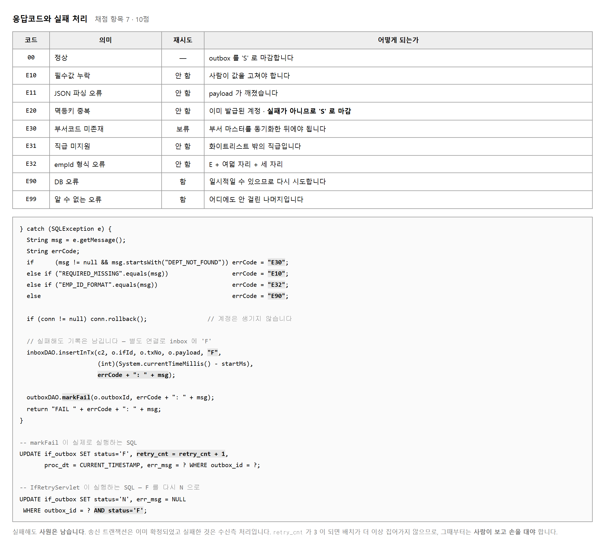
아홉 가지 코드가 세 부류로 나뉩니다.
다시 해도 소용없는 것(E10 · E11 · E31 · E32),
무언가 고친 뒤에야 되는 것(E30),
그냥 다시 해 보면 될 수도 있는 것(E90 · E99) 입니다.
값이 잘못된 것은 사람이 값을 고쳐야 하고,
데이터베이스가 잠깐 끊긴 것은 다시 해 보면 됩니다.
E20 만 성격이 다릅니다. 중복은 실패가 아닙니다.
이미 계정이 있으니 하려던 일은 이루어진 셈입니다.
그래서 'S' 로 마감하고 통계에서는 스킵으로 셉니다.
계정 만들기는 되돌려도 「실패했다」는 사실은 남겨야 합니다.
그래서 되돌린 뒤 별도의 연결로 if_inbox 에
상태 'F' 와 까닭을 넣습니다.
같은 연결로 넣으면 되돌리기에 함께 휩쓸려 사라집니다.
그리고 보내는 쪽 if_outbox 를 'F' 로 고치면서
retry_cnt 를 하나 올립니다. 세 번이 되면 배치가 더 안 집어갑니다.
그때부터는 사람이 모니터링 화면을 보고 손을 대야 합니다.
| 이렇게 적으면 | 이렇게 적습니다 |
|---|---|
| NullPointerException | E10: 필수값 누락 (deptCd) |
| SQLException | E30: DEPT_NOT_FOUND:D999 |
| error | E32: empId 형식 오류 (E2026009) |
왼쪽처럼 적으면 화면을 봐도 무엇을 고쳐야 할지 모릅니다. 오른쪽은 코드로 분류할 수 있고 문장으로 읽을 수 있습니다. 채점 항목 11 이 「err_msg 가 사람이 읽을 수 있는 형태로 기록되는가」 입니다. 보고서에 이 칸을 그대로 옮겨 붙일 수 있어야 합니다.
목적 — 항목 7 은 10점 입니다. 실패를 막는 것이 아니라 실패를 잘 남기는 것이 과제입니다. 남긴 것이 모니터링 화면과 보고서의 내용이 됩니다.
아홉 개를 외우지 말고 「다시 해서 될 것인가」 로 나누십시오.
| 부류 | 코드 | 누가 손을 대야 하는가 |
|---|---|---|
| 다시 해도 소용없음 | E10 · E11 ·
E31 · E32 |
값이 잘못됐습니다. 보내는 쪽이 고쳐야 합니다 |
| 고친 뒤에야 됨 | E30 |
없는 부서입니다. 받는 쪽에 부서를 넣어야 합니다 |
| 다시 하면 될 수도 | E90 · E99 |
아무도. 잠깐 끊긴 것이니 다음 배치가 다시 합니다 |
| 따로 | 왜 |
|---|---|
00 | 성공입니다 |
E20 |
중복 — 실패가 «아닙니다».
이미 계정이 있으니 하려던 일은 이루어졌습니다.
'S' 로 마감하고 스킵으로 셉니다 (실습 2-9 · 2-10) |
err_msg 를 «두 조각» 으로 적습니다| 이렇게 적으면 | 이렇게 적습니다 |
|---|---|
NullPointerException |
E10: 필수값 누락 (deptCode) |
SQLException |
E30: DEPT_NOT_FOUND:D999 |
error |
E32: empId 형식 오류 (E2026009) |
앞은 코드, 뒤는 문장입니다. 코드로는 세고, 문장으로는 읽습니다. 왼쪽처럼 적으면 화면을 봐도 무엇을 고쳐야 할지 모릅니다.
E10: 필수값 누락 만으로는 여섯 항목 중 무엇인지 모릅니다.
(deptCode) 한 마디가 있으면 그 자리로 바로 갑니다.try {
conn.setAutoCommit(false);
… inbox · account · history …
conn.commit();
return "OK: 계정 발급";
} catch (SQLException e) {
conn.rollback(); // ① 계정 만들기는 되돌리고
String code = classify(e); // ② 코드를 정하고
String msg = code + ": " + detail(e);
inboxDAO.insertFail(txNo, msg); // ③ «별도 연결» 로 실패를 남기고
outboxDAO.markFail(outboxId, msg); // ④ 보내는 쪽도 F 로
return "FAIL: " + msg;
}
retry_cnt 가 «멈추는» 것을 확인합니다markFail 이 이 SQL 을 돌립니다.
UPDATE if_outbox
SET status = 'F', retry_cnt = retry_cnt + 1, err_msg = ?
WHERE seq = ?
없는 부서 코드로 한 건을 만들어 배치를 네 번 돌려 보십시오.
1회 E20260301003 → F : Cannot add or update a child row: a foreign key constraint fails …
2회 E20260301003 → F : …
3회 E20260301003 → F : …
4회 (읽지 않습니다)
tx_no status retry_cnt
E20260301003 N 3 ← 더 이상 안 잡힙니다
| 그 다음 | |
|---|---|
| 배치는 손을 뗍니다 | retry_cnt < 3 조건에 걸려 안 읽습니다 |
| 사람이 봐야 합니다 | 모니터링 화면의 실패 목록에 남습니다 (실습 2-13) |
| 고친 뒤에는 | 부서를 넣고 retry_cnt=0, status='N' 으로
되돌려 다시 태웁니다 |
| 코드 | 어떻게 내는가 | 나오는 것 |
|---|---|---|
E30 |
부서를 D999 로 등록 |
foreign key constraint fails |
E20 |
처리한 건의 outbox 를
'N' 으로 되돌림 |
Duplicate entry … uk_inbox_tx |
E10 |
payload 에서 deptCode 를 빼고 넣음 |
값이 비어 부서 검증에 걸립니다 |
E99 |
MySQL 을 잠깐 내림 | Communications link failure |
넷을 다 내 보고 err_msg 를 조회한 화면이
항목 7 의 가장 좋은 근거입니다.
SELECT tx_no, retry_cnt, LEFT(err_msg, 60) AS err
FROM HrmDB.if_outbox WHERE status='F' ORDER BY seq;
tx_no retry_cnt err
E20260301003 1 Cannot add or update a child row: a foreign key con
E30: DEPT_NOT_FOUND:D999 로 바꾸는 것이
이 실습에서 할 일입니다.
고친 뒤의 화면을 나란히 붙이면 항목 7 이 분명해집니다.err_msg 길이를 넘기지 않습니다err_msg 는 VARCHAR(500) 입니다.
예외 메시지를 통째로 넣으면 넘칠 수 있습니다.
String msg = e.getMessage();
if (msg != null && msg.length() > 200) msg = msg.substring(0, 200);
잘라 넣되 앞머리의 코드는 반드시 남기십시오.
뒤가 잘려도 E30 만 보이면 분류는 됩니다.
제출물 — 응답코드 아홉 표 + 코드 넷을 일부러 낸
err_msg 조회 + retry_cnt 가 3 에서 멈춘 화면
스스로 확인 —
① err_msg 가 코드 + 문장 꼴입니까
② 실패 기록을 별도 연결로 남깁니까
③ E20 을 실패로 안 셉니까
④ retry_cnt 가 3 에서 멈춥니까
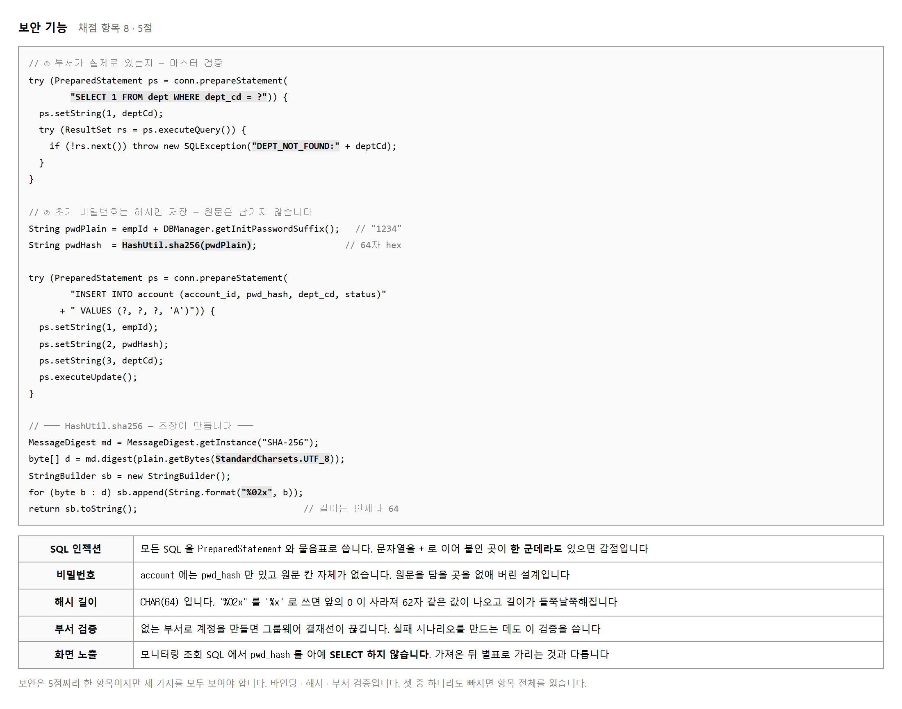
SQL 을 문자열로 이어 붙이면 값 안에 든 따옴표가 SQL 의 일부로 읽힙니다.
물음표를 두고 setString 으로 채우면
값은 끝까지 값으로만 남습니다.
이 과제에서는 열두 파일 전부에 이 규칙이 걸립니다.
한 군데라도 이어 붙인 곳이 있으면 항목 8 을 잃습니다.
스스로 확인하는 법이 있습니다. 프로젝트 전체에서
"SELECT 나 "INSERT 로 시작하는 줄을 찾아
그 뒤에 + 가 붙어 있는지 보십시오.
상수를 여러 줄로 나누느라 붙은 + 는 괜찮고,
변수가 붙은 + 가 문제입니다.
해시는 되돌릴 수 없는 변환입니다. 같은 값을 넣으면 늘 같은 결과가 나오지만, 결과에서 원래 값을 알아낼 수는 없습니다. 그래서 비밀번호를 그대로 저장하지 않고 해시만 저장합니다. 나중에 로그인할 때는 들어온 값을 똑같이 해시해 비교합니다.
account 테이블에는 원문을 담을 칸 자체가 없습니다.
pwd_hash CHAR(64) 뿐입니다. 이것이 설계로 막는 방식입니다.
길이가 CHAR(64) 로 못 박혀 있으니
다만 짧은 값을 넣어도 오류가 나지는 않습니다.
CHAR 는 모자란 만큼 채워 넣을 뿐이라, 길이를 직접 세어 봐야
드러납니다 (실습 2-12 절차 4).
// 자주 틀리는 곳 — 앞자리 0 이 사라집니다
sb.append(String.format("%x", b)); // 0x0a → "a" (한 자리)
sb.append(String.format("%02x", b)); // 0x0a → "0a" (두 자리) ← 맞는 것
// 확인하는 법 — 길이가 64 가 아니면 틀린 것입니다
System.out.println(HashUtil.sha256("E202605270011234").length()); // 64
받는 쪽에는 부서 마스터 dept 가 따로 있습니다.
보내는 쪽이 보낸 부서 코드가 거기 있는지 확인한 뒤에야 계정을 만듭니다.
없으면 DEPT_NOT_FOUND 로 일부러 실패시킵니다.
이 검증이 실패 시나리오를 만드는 데도 쓰입니다.
D999 는 마스터에 없는 코드라 반드시 실패합니다.
다음 단원에서 이것으로 실패와 재시도를 시연합니다.
목적 — 항목 8 은 5점인데 셋을 다 해야 받습니다. 바인딩 · 해시 · 부서 검증입니다. 셋 다 안 해도 화면은 멀쩡히 돌아갑니다. 그래서 빠뜨립니다.
Eclipse 에서 Ctrl+H → File Search,
Containing text 에 이것을 넣습니다.
"SELECT
"INSERT
"UPDATE
"DELETE
찾은 줄마다 그 뒤에 + 가 있는지 봅니다.
괜찮은 + | 문제인 + |
|---|---|
"SELECT a, b FROM t"
상수끼리 이은 것입니다 |
"SELECT * FROM t"
변수가 붙었습니다 |
구별법은 하나입니다. + 뒤에 따옴표가 있으면 상수,
변수 이름이 있으면 문제입니다.
private boolean deptExists(Connection conn, String deptCode) throws SQLException {
String sql = "SELECT COUNT(*) FROM dept WHERE dept_code = ?";
try (PreparedStatement ps = conn.prepareStatement(sql)) {
ps.setString(1, deptCode);
try (ResultSet rs = ps.executeQuery()) {
rs.next();
return rs.getInt(1) > 0;
}
}
}
| 검증을 안 하면 | 검증을 하면 |
|---|---|
계정을 만들려다
외래키 위반으로 터집니다.
err_msg 에
foreign key constraint fails …
라는 긴 말이 들어갑니다 |
미리 걸러
E30: DEPT_NOT_FOUND:D999
라고 짧고 분명하게 남깁니다 |
막히기는 둘 다 막힙니다. 남는 말이 다릅니다.
항목 11(err_msg 가 읽을 만한가)과도 이어집니다.
public static String sha256(String s) throws Exception {
MessageDigest md = MessageDigest.getInstance("SHA-256");
byte[] d = md.digest(s.getBytes(StandardCharsets.UTF_8));
StringBuilder sb = new StringBuilder();
for (byte b : d) sb.append(String.format("%02x", b));
return sb.toString();
}
| 적은 것 | 0x0a 를 바꾸면 | 결과 길이 |
|---|---|---|
"%x" | "a" — 한 자리 |
61 ~ 64자로 들쭉날쭉 |
"%02x" | "0a" — 두 자리 |
언제나 64자 |
%x 가 «가끔 맞는» 것을 확인합니다여기가 함정입니다. 하나만 시험해 보고 넘어가면 안 됩니다.
E202603010011234 %x=62자 %02x=64자
E202604010011234 %x=62자 %02x=64자
abc %x=61자 %02x=64자
200번 중 %x 가 64자를 낸 횟수 : 29
passwd_hash 가 CHAR(64) 이니
짧으면 막힐 것 같지만 그렇지 않습니다.
들어갔습니다 — 오류가 «안» 납니다
account_id len
E20260701001 61
CHAR 는 모자란 만큼 채워 넣을 뿐입니다.
길이를 직접 세어 봐야 드러납니다.
SELECT account_id, CHAR_LENGTH(passwd_hash) AS len
FROM GroupwareDB.account
WHERE CHAR_LENGTH(passwd_hash) <> 64;
0건이어야 합니다. 이 조회를 보고서에 넣으십시오.
| 남기면 안 되는 곳 | 확인법 |
|---|---|
account 테이블 |
원문 칸이 아예 없습니다. 설계로 막혀 있습니다 |
| 콘솔 출력 | System.out.println("비번: " + pw)
같은 줄이 없는지 찾으십시오 |
err_msg |
예외 메시지에 값이 딸려 갈 수 있습니다 |
해시는 되돌릴 수 없습니다. 같은 값을 넣으면 늘 같은 결과가 나오지만, 결과에서 원래 값을 알아낼 수는 없습니다. 로그인할 때는 들어온 값을 똑같이 해시해 비교합니다.
| 확인 | 어떻게 | |
|---|---|---|
| □ | 바인딩 | "SELECT 등을 찾아 변수 + 가 0건 |
| □ | 해시 | CHAR_LENGTH <> 64 조회가 0건 |
| □ | 부서 검증 | D999 로 넣어 보고
E30 이 남는지 |
제출물 — 검색 결과(변수 + 0건) +
길이 조회(0건) + E30 이 남은 err_msg
스스로 확인 —
① %02x 입니까 (%x 아님)
② 여러 값으로 길이를 확인했습니까
③ 부서 검증을 물음표로 합니까
④ 비밀번호 원문이 어디에도 안 남습니까
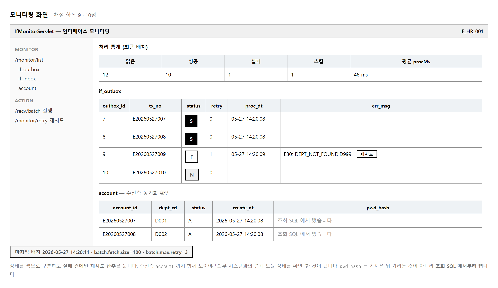
채점 항목 9 가 요구하는 것이 넷입니다. 상태(N · S · F), 재시도 횟수, 처리 통계, 처리 시간 입니다. 여기에 항목 10 이 요구하는 받는 쪽 계정 목록까지 한 화면에 놓으면 두 항목을 한꺼번에 보일 수 있습니다.
보내는 쪽과 받는 쪽이 서로 다른 데이터베이스에 있다는 것을 잊지 마십시오.
if_outbox 는 HrmDB, 나머지는 GroupwareDB 입니다.
한 화면을 그리는 데 연결이 둘 필요합니다.
상태를 글자로만 적어 두면 목록이 길어졌을 때 실패가 눈에 안 띕니다. 작업지시서가 「S 는 녹색 · F 는 빨강 · N 은 주황」 으로 못 박아 두었습니다. 그대로 하십시오. 교안의 그림은 흑백으로 인쇄해도 구분되게 그렸습니다.
재시도 단추는 실패한 줄에만 나와야 합니다.
성공한 줄에도 단추가 있으면 눌렀을 때 아무 일도 안 일어나
화면이 고장 난 것처럼 보입니다.
되살리는 SQL 자체에 AND status='F' 가 들어 있어
실제로 바뀌지는 않지만, 화면에서부터 막는 편이 맞습니다.
-- 이렇게 꺼내 놓고 화면에서 가리는 것은 반쪽짜리입니다 SELECT account_id, pwd_hash, dept_cd, status FROM account; -- 조회에서부터 뺍니다 — 정답 코드가 쓰는 SQL SELECT account_id, dept_cd, status, create_dt FROM account ORDER BY account_id DESC LIMIT 100;
화면에서 별표로 가려도 브라우저 개발자 도구로 보면 그대로 보입니다. 꺼내지 않으면 볼 수 없습니다. 이것이 「외부 노출 방지」의 뜻입니다.
목적 — 항목 9 는 10점, 조원 3 의 몫입니다. 화면을 먼저 그리려 하면 막힙니다. 조회 SQL 을 먼저 만들어 콘솔에서 확인하고, 그 다음 화면에 붙입니다. 테이블만 있으면 다른 조원을 안 기다려도 시작할 수 있습니다.
| 보여야 할 것 | 어느 데이터베이스 |
|---|---|
if_outbox 목록 · 상태별 통계 |
HrmDB |
account 목록 · 처리시간 |
GroupwareDB |
한 화면을 그리는 데 getHrmConnection() 과
getGroupwareConnection() 을 둘 다 씁니다.
섞으면 「없는 표」 오류가 납니다 (실습 2-7).
-- ① 상태별 건수
SELECT status, COUNT(*) AS cnt FROM HrmDB.if_outbox
GROUP BY status ORDER BY status;
-- ② 처리시간 통계
SELECT COUNT(*) AS 건수, MIN(proc_ms) AS 최소,
ROUND(AVG(proc_ms),1) AS 평균, MAX(proc_ms) AS 최대
FROM GroupwareDB.if_inbox WHERE status='S';
-- ③ 전송 목록 (상태 · 재시도 · 오류)
SELECT seq, tx_no, status, retry_cnt, LEFT(err_msg,60) AS err, reg_dt
FROM HrmDB.if_outbox ORDER BY seq DESC LIMIT 100;
-- ④ 계정 목록 — 해시는 «꺼내지 않습니다»
SELECT account_id, dept_code, acct_status, reg_dt
FROM GroupwareDB.account ORDER BY account_id DESC LIMIT 100;
돌려 보면 이렇게 나옵니다.
상태별
status cnt
S 2
처리시간
건수 최소 평균 최대
4 7 13.3 19
계정 목록
account_id dept_code acct_status reg_dt
E20260801001 D999 A 2026-09-18 00:37:36
E20260601001 D002 A 2026-09-18 00:28:03
| 반쪽짜리 | 맞는 것 |
|---|---|
SELECT account_id, passwd_hash,
dept_code FROM account;
화면에서 별표로 가림 |
SELECT account_id, dept_code,
acct_status, reg_dt FROM account;
아예 안 꺼냄 |
F12 → Network 나
페이지 소스 보기 로 그대로 보입니다.
꺼내지 않으면 볼 수 없습니다.
이것이 「외부 노출 방지」의 뜻입니다 (항목 8 과도 이어집니다).| 상태 | 색 | 뜻 |
|---|---|---|
S | 녹색 | 잘 보냈습니다 |
F | 빨강 | 사람이 봐야 합니다 |
N | 주황 | 아직 기다리는 중 |
작업지시서가 못 박아 둔 색입니다. 바꾸지 마십시오. 글자로만 적어 두면 목록이 길어졌을 때 실패가 눈에 안 띕니다.
<td class="st-${row.status}">${row.status}</td>
/* CSS */
.st-S { color:#1a7f37; font-weight:700; }
.st-F { color:#c9252d; font-weight:700; }
.st-N { color:#bf6a02; font-weight:700; }
<c:if test="${row.status eq 'F'}">
<button ...>재시도</button>
</c:if>
되살리는 SQL 에도 조건이 들어 있습니다.
UPDATE if_outbox SET status='N', err_msg=NULL
WHERE tx_no = ? AND status = 'F'
성공한 줄에 눌러 보면 이렇게 됩니다.
0줄 바뀜
| SQL 조건만 있으면 | 화면에서도 막으면 |
|---|---|
| 눌러도 아무 일이 안 일어나 화면이 고장 난 것처럼 보입니다 | 단추가 없으니 누를 일이 없습니다 |
둘 다 하십시오. 화면은 실수를 막고, SQL 은 우회를 막습니다.
┌──────────────────────────────────────────────┐
│ 읽음 4 성공 3 스킵 1 실패 0 │
│ 평균 처리시간 13.3ms (최소 7 / 최대 19) │
└──────────────────────────────────────────────┘
목록보다 위에 놓아야 합니다. 채점자가 화면을 열었을 때 가장 먼저 보이는 것이 「돌아가고 있다」 는 증거입니다.
| 항목 | 요구 | 화면의 어디 |
|---|---|---|
| 9 | 상태 · 재시도 · 통계 · 처리시간 | 위쪽 통계 + 전송 목록 |
| 10 | 받는 쪽 계정이 실제로 생겼는가 | 아래쪽 계정 목록 |
한 화면에 놓으면 캡처 한 장으로 두 항목을 보일 수 있습니다. 따로 그리면 캡처도 둘, 설명도 둘이 됩니다.
제출물 — 조회 넷의 콘솔 결과 + 모니터링 화면 캡처 (통계 · 상태 색 · 재시도 단추 · 계정 목록이 다 보이게)
스스로 확인 —
① 연결 둘을 다 씁니까
② passwd_hash 를 조회에서 뺐습니까
③ 재시도 단추가 F 줄에만 있습니까
④ 통계에 스킵 칸이 따로 있습니까
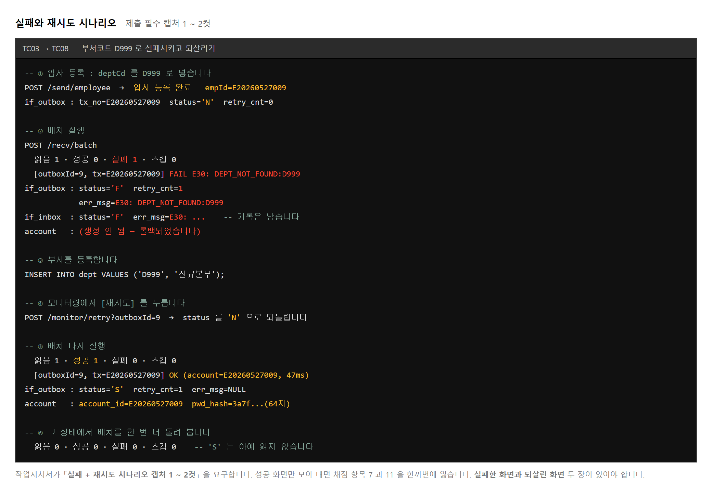
D999 를 넣고 등록합니다.
등록 자체는 성공합니다. 보내는 쪽은 부서 마스터를 모릅니다.if_outbox 가 'F' 로 바뀝니다. 여기서 한 컷.INSERT INTO dept VALUES ('D999','신규본부');'N' 으로 돌아갑니다.여섯 번째 단계를 빠뜨리는 사람이 많습니다.
성공한 뒤 한 번 더 돌려 아무것도 안 잡히는 것을 보여야
상태 관리가 제대로 된다는 증거가 됩니다.
읽음이 0 이 아니라 1 이 나온다면 markSuccess 가 안 불린 것입니다.
| 어디 | 실패 뒤에 어떻게 되어 있어야 하는가 |
|---|---|
| employee | 사원은 남아 있습니다. 보내는 쪽은 이미 확정되었습니다 |
| if_outbox | 'F' · retry_cnt=1 · err_msg 에 까닭 |
| if_inbox | 'F' 기록이 남습니다. 별도 연결로 넣었기 때문입니다 |
| account | 계정은 없습니다. 되돌려졌습니다 |
네 줄 중 하나라도 다르면 트랜잭션 경계가 잘못 잡힌 것입니다.
account 가 생겨 있으면 되돌리기가 안 된 것이고,
if_inbox 가 비어 있으면 실패 기록을 같은 연결로 넣은 것입니다.
목적 — 제출물에 「실패했다가 되살린 화면 한두 컷」 이 들어갑니다. 이건 일부러 만들어야 나오는 그림입니다. 순서를 지키지 않으면 찍을 장면이 안 생깁니다.
D999 로 등록합니다입사 등록 폼에서 부서코드만 D999 로 넣습니다.
[1] 부서코드 D999 로 입사 등록
등록 성공 E20260801001
[2] 배치 실행 — 실패합니다
E20260801001 → F : Cannot add or update a child row: a foreign key constraint fails
(`GroupwareDB`.`account`, CONSTRAINT `fk_account_dept`
FOREIGN KEY (`dept_code`) REFERENCES `dept` (`dept_code`))
if_outbox
tx_no status retry_cnt err
E20260801001 F 1 Cannot add or update a child row: a foreign key co
| 첫 컷에 보여야 할 것 | |
|---|---|
| 모니터링 화면 | 빨간 F · retry_cnt 1 ·
err_msg · 재시도 단추 |
| 실패 통계 | 실패 1 |
INSERT INTO GroupwareDB.dept (dept_code, dept_name) VALUES ('D999','신규본부');
1줄 바뀜
고쳐야 되는 종류의 실패입니다 (실습 2-11 의 E30).
그냥 다시 돌리면 또 실패합니다.
UPDATE if_outbox SET status='N', err_msg=NULL
WHERE tx_no='E20260801001' AND status='F';
1줄 바뀜
retry_cnt 는 그대로 둡니다.
「몇 번 실패했었다」 는 기록이라 지우면 안 됩니다.
status 만 N 으로 돌려 배치가 다시 집게 합니다.
[5] 배치 다시 실행 — 성공합니다
E20260801001 → S (33ms)
account
account_id user_name dept_code
E20260801001 신규본부원 D999
| 둘째 컷에 보여야 할 것 | |
|---|---|
| 모니터링 화면 | 녹색 S · 재시도 단추가 사라짐 ·
계정 목록에 한 줄 늘어남 |
| 통계 | 성공 +1, 실패 0 |
[6] 한 번 더 — 아무것도 안 잡혀야 합니다
읽을 것이 남았는가
cnt
0
| 여기서 나오는 것 | 뜻 |
|---|---|
| 읽음 0 | 맞습니다. 상태 관리가 제대로 됐습니다 |
| 읽음 1 | markSuccess 가 안 불렸습니다.
status 가 아직 N 입니다 |
[7] 성공한 줄에 재시도를 눌러도 안 바뀝니다
0줄 바뀜
SQL 에 AND status='F' 가 있어 아무 일도 안 일어납니다.
화면에서도 단추를 안 보여 주는 편이 맞지만,
SQL 로도 막혀 있다는 것을 보이면 든든합니다.
| 컷 | 언제 | 한 줄 설명에 적을 것 |
|---|---|---|
| 1 | 절차 2 직후 | 「D999 로 등록 후 배치 — 외래키 위반으로 F, retry_cnt 1 (항목 7 · 9)」 |
| 2 | 절차 5 직후 | 「부서 등록 후 재시도 — S 로 바뀌고 계정 발급 (항목 9 · 10)」 |
| 3 | 절차 6 직후 (선택) | 「한 번 더 실행 — 읽음 0, 중복 처리 없음 (항목 10)」 |
세 컷을 나란히 놓으면 실패 · 복구 · 안정이 한눈에 보입니다. 두 컷이 필수지만 셋이 훨씬 낫습니다.
| 치울 것 | 왜 |
|---|---|
D999 부서와 그 계정 |
남겨 둬도 되지만, 보고서의 통계 숫자와 맞춰 두는 편이 깔끔합니다 |
| 표준을 어긴 연습용 줄 | 실습 2-5 에서 넣은 것이 남아 있으면 검사 SQL 에 걸립니다 |
제출물 — 실패 컷 · 성공 컷 (선택: 읽음 0 컷) + 여섯 걸음의 콘솔 기록
스스로 확인 —
① 등록 자체는 성공하는 것을 봤습니까
② 실패 컷에 err_msg 와 retry_cnt 가 보입니까
③ 한 번 더 돌려 읽음 0 을 확인했습니까
④ 컷마다 항목 번호를 적었습니까
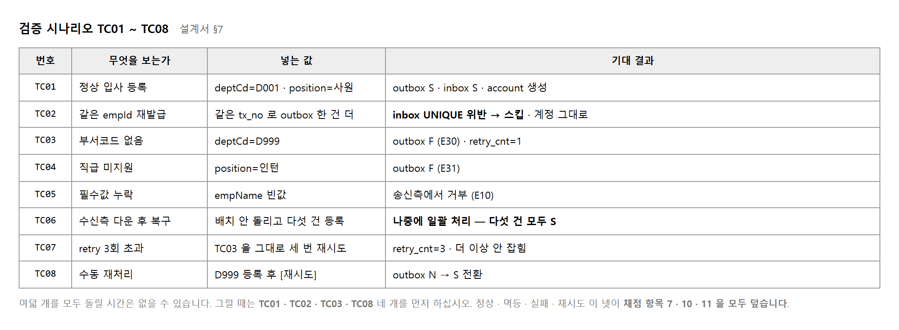
무엇을 시험해야 할지 고민할 필요가 없습니다. 설계서 §7 에 여덟 개가 적혀 있고, 기대 결과까지 적혀 있습니다. 그대로 돌려 보고 결과가 같으면 통과입니다. 시간이 모자라면 TC01 · TC02 · TC03 · TC08 넷을 먼저 하십시오. 정상 · 멱등 · 실패 · 재시도 넷이 채점 항목 7 · 10 · 11 을 모두 덮습니다.
배치를 아예 안 돌린 채 다섯 건을 등록해 두고, 한참 뒤에 배치를 한 번 돌립니다. 다섯 건이 모두 처리됩니다. 받는 쪽이 멈춰 있는 동안에도 보내는 쪽은 아무 지장이 없었다는 뜻입니다. 직접 부르는 방식이었다면 다섯 번 모두 오류였을 것입니다.
시연할 때 이 점을 말로 설명하면 좋습니다. 「그룹웨어를 껐다 켜도 입사 등록은 계속 됩니다」 한 문장이면 됩니다. 채점 항목 2 가 물어 본 연계 기능의 값이 여기서 드러납니다.
-- 보고서에 붙일 숫자를 뽑는 SQL SELECT status, COUNT(*) AS 건수, AVG(retry_cnt) AS 평균재시도 FROM if_outbox GROUP BY status; SELECT status, COUNT(*) AS 건수, AVG(proc_ms) AS 평균처리시간 FROM if_inbox GROUP BY status; SELECT COUNT(*) AS 발급계정 FROM account;
세 줄이면 검증 보고서의 숫자가 다 나옵니다. 화면 캡처와 이 숫자가 맞아야 합니다. 캡처는 성공 열 건인데 표에는 여덟 건이면 채점자가 먼저 알아봅니다.
목적 — 무엇을 시험할지 고민할 필요가 없습니다. 설계서 §7 에 여덟 개가 기대 결과까지 적혀 있습니다. 시간이 모자라면 넷만 먼저 하십시오.
| 번호 | 무엇을 보는가 | 넣는 값 | 덮는 항목 |
|---|---|---|---|
| TC01 | 정상 처리 | 제대로 된 부서코드 | 5 · 6 |
| TC02 | 멱등 중복 | 같은 건을 두 번 | 10 |
| TC03 | 실패 기록 | deptCode=D999 | 7 · 11 |
| TC08 | 재시도 복구 | 부서 등록 후 재시도 | 9 · 11 |
정상 · 멱등 · 실패 · 재시도 넷입니다. 이미 실습 2-10 과 2-14 에서 돌려 본 것들이라 결과를 표에 옮겨 적기만 하면 됩니다.
배치를 아예 안 돌린 채 다섯 건을 등록해 둡니다.
등록 성공 E20260901001
등록 성공 E20260901002
등록 성공 E20260901003
등록 성공 E20260901004
등록 성공 E20260901005
쌓인 것 status N : 5건
받는 쪽 계정 0건
→ 받는 쪽은 여태 아무것도 모릅니다
한참 뒤 배치를 한 번 돌립니다.
E20260901001 → S (24ms)
E20260901002 → S (20ms)
E20260901003 → S (17ms)
E20260901004 → S (17ms)
E20260901005 → S (20ms)
받는 쪽 계정 5건
| TC | 기대 결과 | 실제 결과 | 통과 |
|---|---|---|---|
| 01 | S · 계정 1건 | S (24ms) · 계정 1건 | ○ |
| 02 | 스킵 · 계정 여전히 1건 | SKIP · 1건 | ○ |
| 03 | F · err_msg 기록 | F · retry_cnt 1 | ○ |
| 08 | 재시도 후 S | S (33ms) | ○ |
「실제 결과」 칸을 비워 두지 마십시오. 기대 결과만 옮겨 적은 표는 돌려 봤다는 증거가 못 됩니다. 처리시간 같은 실제 숫자가 들어가야 합니다.
-- ① 송신 상태별
SELECT status, COUNT(*) AS 건수, ROUND(AVG(retry_cnt),2) AS 평균재시도
FROM HrmDB.if_outbox GROUP BY status ORDER BY status;
-- ② 수신 상태별
SELECT status, COUNT(*) AS 건수, ROUND(AVG(proc_ms),1) AS 평균처리시간
FROM GroupwareDB.if_inbox GROUP BY status ORDER BY status;
-- ③ 발급 계정
SELECT COUNT(*) AS 발급계정 FROM GroupwareDB.account;
① status 건수 평균재시도
F 1 1.00
S 5 0.00
② status 건수 평균처리시간
S 5 5.8
③ 발급계정
5
SELECT (SELECT COUNT(*) FROM HrmDB.if_outbox WHERE status='S') AS 송신성공,
(SELECT COUNT(*) FROM GroupwareDB.if_inbox WHERE status='S') AS 수신성공,
(SELECT COUNT(*) FROM GroupwareDB.account) AS 발급계정;
송신성공 수신성공 발급계정
5 5 5
| 어긋나면 | 어디를 봐야 하는가 |
|---|---|
| 송신성공 < 수신성공 | 계정은 생겼는데 outbox 를 S 로
안 고쳤습니다. 다음 배치가 또 집습니다 |
| 수신성공 < 발급계정 | if_inbox 를 안 거치고 계정을 만든 자리가 있습니다.
트랜잭션이 안 묶였을 수도 있습니다 |
| 발급계정 < 수신성공 | 받은 기록은 있는데 계정이 없습니다. 가운데서 되돌려진 것입니다 |
시간이 남으면 TC04 · 05 · 06 · 07 도 돌립니다. 못 한 것은 「미수행」 이라고 적으십시오. 빈칸으로 두면 빠뜨린 것인지 안 한 것인지 알 수 없습니다.
| 적는 법 | 어떻게 읽히는가 |
|---|---|
| 빈칸 | 빠뜨렸다고 읽힙니다 |
| 「미수행 — 시간 부족」 | 알고 안 했다고 읽힙니다. 훨씬 낫습니다 |
제출물 — TC 결과표(실제 결과 칸이 채워진 것) + 보고서용 숫자 세 줄 + 절차 5 의 대조
스스로 확인 — ① 넷(TC01 · 02 · 03 · 08)을 다 돌렸습니까 ② 「실제 결과」 칸에 진짜 숫자가 있습니까 ③ 세 숫자가 서로 맞습니까 ④ 숫자와 캡처가 맞습니까
네 사람의 코드를 한꺼번에 합치면 무엇이 깨졌는지 못 찾습니다. 한 사람씩 넣고 그때마다 돌려 보십시오. 조장의 공통 모듈이 이미 들어가 있으니, 조원 1 → 조원 2 → 조원 3 순서로 하나씩 얹습니다.
| 차례 | 넣는 것 | 확인하는 것 |
|---|---|---|
| 1 | 조원 1 | 입사 등록이 되고 if_outbox 에 'N' 한 줄이 쌓이는가 |
| 2 | 조원 2 | 배치를 돌리면 그 줄이 'S' 가 되고 계정이 생기는가 |
| 3 | 조원 3 | 모니터링에 세 테이블이 다 나오고 재시도가 도는가 |
| 4 | 전체 | TC01 부터 차례로 돌려 설계서의 기대 결과와 같은가 |
작업지시서가 요구하는 것이 넷입니다. 통계, 재시도 결과, 역할별 분담표, 개인별 산출물 정리 입니다. 앞 단원에서 뽑은 SQL 결과와 캡처를 붙이면 앞의 둘은 끝납니다. 분담표는 첫 단원에서 정해 둔 것을 그대로 옮기면 됩니다.
여기에 어긋난 곳을 적은 한 줄을 더하면 좋습니다.
체크리스트와 설계서가 UNIQUE 위치를 다르게 적어 둔 것,
체크리스트의 existsByTxNo 대신 제약 조건으로 막은 것 —
이런 것을 적어 두면 문서를 읽고 판단했다는 것이 드러납니다.
채점 항목 11 은 보고서의 분량이 아니라 이런 것을 봅니다.
db.properties 가 저장소에 올라가 있지 않은가schema.sql 만 돌리면 뜨는가네 번째에서 걸리는 경우가 많습니다.
내 컴퓨터에서만 도는 프로젝트는 채점자가 확인할 수 없습니다.
README 에 준비 순서 세 줄만 적어 두어도 다릅니다.
목적 — 항목 11 은 10점, 조장의 몫입니다. 네 사람 코드를 한꺼번에 합치면 무엇이 깨졌는지 못 찾습니다. 한 사람씩 얹고 그때마다 돌려 봅니다.
| 차례 | 넣는 것 | 여기서 확인하는 것 |
|---|---|---|
| 1 | 조장 (이미 들어 있음) | 두 연결이 각각 HrmDB · GroupwareDB 를 봅니다 |
| 2 | 조원 1 | 입사 등록이 되고 if_outbox 에
'N' 한 줄이 쌓입니다 |
| 3 | 조원 2 | 배치를 돌리면 그 줄이 'S' 가 되고
계정이 생깁니다 |
| 4 | 조원 3 | 모니터링에 세 테이블이 다 나오고 재시도가 돕니다 |
| 5 | 전체 | TC01 부터 차례로 — 설계서의 기대 결과와 같은가 |
| 나오는 것 | 왜 |
|---|---|
cannot find symbol: method insertInTx |
조원끼리 메서드 이름이 다릅니다. 부르는 쪽에 맞춥니다 |
| 계정은 생기는데 이름이 빈칸 | payload 키가 어긋났습니다 (실습 2-4) |
Table 'HrmDB.account' doesn't exist |
연결을 섞어 썼습니다 (실습 2-7) |
| 충돌 표시 줄이 소스에 남음 | <<<<<<< 를 안 지우고 커밋했습니다.
경고 없이 커밋됩니다 |
cd C:\temp
git clone https://github.com/조이름/저장소.git check
cd check
| 여기 «없어야» 할 것 | |
|---|---|
config/db.properties |
있으면 비밀번호가 올라간 것입니다 (항목 8) |
build/ · *.class | 만들어지는 것입니다 |
| 여기 «있어야» 할 것 | |
|---|---|
config/db.properties.sample |
받은 사람이 무엇을 채울지 압니다 |
db/schema.sql | 표를 만들 수 있습니다 |
docs/매핑표.md ·
docs/데이터표준.md |
항목 1 · 3 의 근거입니다 |
| 들어갈 것 | 어디서 가져오는가 | |
|---|---|---|
| □ | 통계 | 실습 2-15 절차 4 의 세 줄 |
| □ | 재시도 결과 | 실습 2-14 의 여섯 걸음 기록 |
| □ | 역할별 분담표 | 실습 2-1 에서 정한 것 그대로 |
| □ | 개인별 산출물 정리 | 각자의 체크리스트 |
항목 11 은 보고서의 분량이 아니라 이런 것을 봅니다.
| 적을 만한 것 | 어느 실습에서 만났는가 |
|---|---|
체크리스트는 if_outbox.tx_no UNIQUE,
설계서와 schema.sql 은 if_inbox.
재입사를 고려하면 if_inbox 가 맞다고 판단 |
실습 2-6 |
체크리스트의 existsByTxNo 대신
제약 조건(UNIQUE)으로 막음.
확인과 넣기 사이의 틈을 없애기 위함 |
실습 2-10 |
useSSL=false 만으로는 MySQL 8 에서
Public Key Retrieval is not allowed 가 나
allowPublicKeyRetrieval=true 를 더함 |
실습 2-7 |
| 묶음 | 컷 수 | 짝이 맞아야 합니다 |
|---|---|---|
| 시작 화면 | 4 | 실습 2-2 에서 찍은 깨진 화면 |
| 완성 화면 | 4 | 같은 화면 넷이 도는 모습 |
| 실패 → 복구 | 1 ~ 2 | 실습 2-14 의 컷 |
시작과 완성을 «같은 화면» 으로 맞춰야 합니다. 시작은 입사 등록인데 완성은 모니터링이면 대조가 안 됩니다. 실습 2-2 에서 파일 이름에 번호를 붙여 둔 까닭입니다.
| 내는 것 | 마지막 확인 | |
|---|---|---|
| □ | 저장소 주소 | 주소창에서 복사. 비공개면 강사 초대 수락 |
| □ | 작업과정 PPT | 여덟 컷 + 실패 복구 컷 |
| □ | 역할별 체크리스트 | 넷 다 있는가 |
| □ | 통합 검증 보고서 | 숫자와 캡처가 맞는가 |
제출물 — 위 넷
db.properties 를 올려서 보안에서 깎입니다.
넷 다 오류가 안 납니다.
그래서 조회 SQL 로 확인하는 습관이 이 교과의 요령입니다.
실습마다 넣어 둔 「0건이어야 합니다」 조회들을
제출 전에 한 번씩 돌려 보십시오.
아래 여덟 가지가 되풀이되는 감점입니다. 눈여겨볼 것은 대부분이 「돌아가기는 하는」 상태라는 점입니다. 화면이 뜨고 계정도 생기는데 채점 항목은 잃습니다. 그래서 스스로 찾기가 어렵고, 미리 알아 두는 것 말고는 방법이 없습니다.
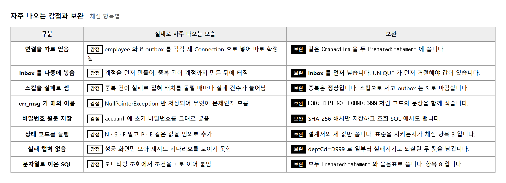